library(matrixStats)
library(DT)
library(mirt)
library(openxlsx)
library(dplyr)
library(knitr)
library(stringr)
library(WrightMap)
library(latticeExtra)
library(patchwork)
library(summarytools)
library(ggplot2)
library(purrr)
library(readxl)
library(tidyverse)
library(tidytext)
library(writexl)
library(scales)
library(tibble)CSNT_Report_2026
CSNT Review Report
This CSNT report conttains items from the CSNT_IRT_Comprehensive_Analysis quarto document.
Libraries
Main dataset is based on the data collected over the last two years. Test data were then examined on a yearly basis. Because the focus of the analysis is 2025, dataset for 2025 based on ‘timecompleted’ is used.
Data Description
There were a total of 137182 test completions in the year 2025.
For the purpose of Item Response Theory analysis, the following test takers were considered:
· Those with a theta score
· Those who have completed the tests – for IRT
· Those with variance in their responses.
Complete NAs and test completions with no variance were excluded from the analysis.
Data selection was based on ‘timecompleted’ . Of those candidates with multiple test instances, only the first test sitting was included in the analysis.
Call Data
# 1. Read all columns as raw text and specify 'na' strings during import
CSNT_All_Diversity_Test_Data24_26Scored <- read_excel(
"~/Desktop/Datasets/2026_10_22_CSNT_Complete_Item_Diversity_Scored.xlsx",
col_types = "text",
na = c("NULL", "null", "NA", "")
)
# 2. Convert Excel serial values to POSIXct datetime
CSNT_All_Diversity_Test_Data24_26Scored <- CSNT_All_Diversity_Test_Data24_26Scored %>%
mutate(across(
c(timestarted, timecompleted),
~ convertToDateTime(as.numeric(.), tz = "UTC")
))
temp<- CSNT_All_Diversity_Test_Data24_26Scored
temp$timecompleted<-as.numeric(substr(temp$timecompleted, 1,4))
CSNT_Complete_Item_Diversity_Clean_2025<-filter(temp, timecompleted==2025)A. Item Usage Report
Item usage has been calculated based on the 2025 dataset.
# 1. Calculate usage for all 'NR' items except those starting with 'NRT'
item_usage_df <- CSNT_Complete_Item_Diversity_Clean_2025 %>%
dplyr::select(starts_with("NR"), -starts_with("NRT")) %>%
summarise(across(everything(), ~ sum(!is.na(.)))) %>%
pivot_longer(
cols = everything(),
names_to = "item_id",
values_to = "usage_count"
) %>%
mutate(
total_records = nrow(CSNT_Complete_Item_Diversity_Clean_2025),
usage_pct = (usage_count / total_records) * 100
) %>%
arrange(desc(usage_count))
# Quick verification: Check how many items were matched
cat("Identified", nrow(item_usage_df), "items starting with NR (excluding NRT).\n")Identified 372 items starting with NR (excluding NRT).ggplot(item_usage_df, aes(x = reorder(item_id, usage_count), y = usage_count)) +
geom_col(fill = "#2b5c8f", width = 0.8) +
coord_flip() +
scale_y_continuous(
labels = comma,
breaks = seq(0, 70000, by = 5000), # 5,000 intervals
expand = expansion(mult = c(0, 0.05))
) +
labs(
title = "Tabel 1: Item Usage: NR Items",
x = "Item ID",
y = "Number of Administrations (Non-NA Responses)"
) +
theme_minimal(base_size = 13) +
theme(
panel.grid.minor = element_blank(),
panel.grid.major.y = element_blank(),
axis.text.y = element_text(size = 5), # Smaller text to avoid collision
axis.text.x = element_text(angle = 45, hjust = 1) # Slanted so 5,000 tick numbers don't overlap
)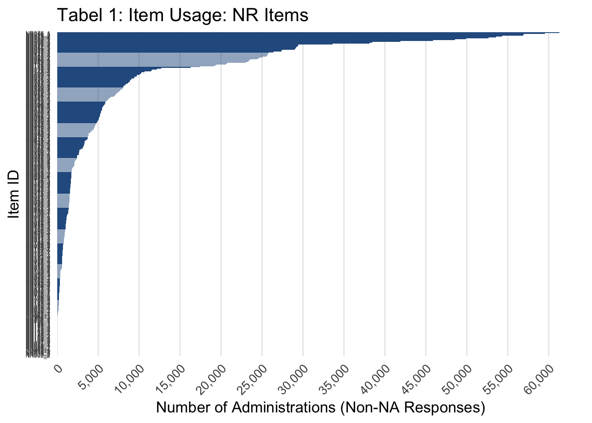
##ggsave("item_usage.png", plot = p, width = 12, height = 30, dpi = 300, limitsize = FALSE)Item Usage by Percentage can be found here.
# 1. Read Excel File & Extract Item Difficulties
# ------------------------------------------------------------------
item_params_df <- read_excel("~/Desktop/Datasets/2026_CSNT_ItemParameter2021_Usage2026.xlsx") %>%
dplyr::select(Item_id, Item_Difficulty)
# 2. Merge Difficulty & Compute Panels / Exposure Tiers
# ------------------------------------------------------------------
num_panels <- 2
item_usage_faceted <- item_usage_df %>%
# Join Item_Difficulty matching 'item_id' in your data to 'ItemID' in the Excel sheet
left_join(item_params_df, by = c("item_id" = "Item_id")) %>%
arrange(desc(usage_count)) %>%
mutate(
panel_group = ceiling(row_number() / (n() / num_panels)),
panel_label = factor(
paste0("Group ", panel_group, " of ", num_panels),
levels = paste0("Group ", 1:num_panels, " of ", num_panels)
),
usage_tier = factor(
case_when(
usage_pct < 10 ~ "< 10%",
usage_pct >= 10 & usage_pct <= 20 ~ "10% – 20%",
usage_pct > 20 ~ "> 20%"
),
levels = c("< 10%", "10% – 20%", "> 20%")
)
)
# 3. Usage Tier Summary Table
# ------------------------------------------------------------------
usage_tier_summary <- item_usage_faceted %>%
dplyr::count(usage_tier, name = "item_count", .drop = FALSE) %>%
mutate(
percentage_of_bank = round((item_count / sum(item_count)) * 100, 1)
)
print(usage_tier_summary)# A tibble: 3 × 3
usage_tier item_count percentage_of_bank
<fct> <int> <dbl>
1 < 10% 331 89
2 10% – 20% 21 5.6
3 > 20% 20 5.4# 4. Graph: Exposure (Usage %) vs. Item Difficulty (Logits)
# ------------------------------------------------------------------
ggplot(item_usage_faceted, aes(x = Item_Difficulty, y = usage_pct)) +
geom_point(aes(color = usage_tier), size = 2.5, alpha = 0.85) +
geom_smooth(method = "loess", color = "#2b5c8f", fill = "grey80", se = TRUE) +
scale_color_manual(
name = "Exposure Tier",
values = c("< 10%" = "#d95f02", "10% – 20%" = "#7570b3", "> 20%" = "#1b9e77")
) +
scale_y_continuous(labels = function(x) paste0(x, "%")) +
labs(
title = "Table 2: Item Exposure Rate vs. Item Difficulty",
subtitle = paste0(
"Matched items: K = ", sum(!is.na(item_usage_faceted$Item_Difficulty)),
" | Trend smoothed via LOESS"
),
x = "Item Difficulty (Logits b)",
y = "Exposure Rate (% of Examinees)"
) +
theme_minimal(base_size = 12) +
theme(
legend.position = "bottom",
panel.grid.minor = element_blank()
)`geom_smooth()` using formula = 'y ~ x'Warning: Removed 12 rows containing non-finite outside the scale range
(`stat_smooth()`).Warning: Removed 12 rows containing missing values or values outside the scale range
(`geom_point()`).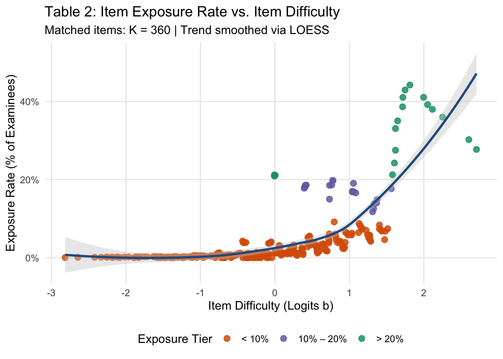
In Computerized Adaptive Testing (CAT), acceptable maximum item exposure rates (rmax) typically range between 0.10 and 0.20 (10% to 20%), though the ideal threshold depends on the size of the item bank, test security requirements, and the specific control method used. For the purpose of description exposure rates are divided into three groups.
The above results tell two things: Not many items are exposed excessively, however, most exposed items are the ones with +1 difficulty parameter. It is because the algorithm needs difficult items to feed into the candidate theta calculation.
Add Grade Data Here
# 1. Read the grade and demographics CSV
CSNT_All_Grade_Type <- read_csv(
"~/Desktop/Datasets/2026_10_22_CSNT_All_Grade_Type.csv",
col_types = cols(.default = "c") # Character type prevents ID precision loss and mismatch errors
)
# Optional interactive inspection (comment out if rendering/knitting)
View(CSNT_All_Grade_Type)
# 2. Prepare grade & demographic fields from CSNT_All_Grade_Type
grade_data <- CSNT_All_Grade_Type %>%
select(
fielddata,
job_grade,
gender,
disability,
application_form_applicant_type
) %>%
distinct(fielddata, .keep_all = TRUE) # Deduplicate on fielddata
# 3. Merge into your main cleaned test dataset
CSNT_Complete_Item_Diversity_Clean_2025 <- CSNT_Complete_Item_Diversity_Clean_2025 %>%
mutate(fielddata = as.character(fielddata)) %>%
left_join(grade_data, by = "fielddata")1PL Test Summary
# STEP 1: ISOLATE & CLEAN ITEM MATRIX (TYPE-SAFE)
# =====================================================================
# 1. Capture candidate identifiers aligned with row positions
cand_ids <- CSNT_Complete_Item_Diversity_Clean_2025$fielddata
# 2. Extract item columns (starts with NR, but not NRT)
raw_items <- CSNT_Complete_Item_Diversity_Clean_2025 %>%
select(starts_with("NR"), -starts_with("NRT"))
# 3. CRITICAL: Force all item columns to numeric (handles text "0"/"1" and NAs cleanly)
raw_items_num <- raw_items %>%
mutate(across(everything(), ~ suppressWarnings(as.numeric(as.character(.x)))))
# 4. Filter out items with 0 responses (all NA)
valid_resp_counts <- colSums(!is.na(raw_items_num))
items_non_empty <- raw_items_num[, valid_resp_counts > 0]
# 5. Filter out items with 0 variance (all 0s or all 1s)
has_variance <- sapply(items_non_empty, function(col) {
unique_vals <- unique(na.omit(col))
length(unique_vals) > 1
})
clean_items <- items_non_empty[, has_variance]
# Summary of item filtering
dropped_items <- setdiff(names(raw_items), names(clean_items))
cat("Original items:", ncol(raw_items), "\n")Original items: 372 cat("Retained items for 1PL:", ncol(clean_items), "\n")Retained items for 1PL: 321 cat("Dropped items (0 responses or 0 variance):", length(dropped_items), "\n\n")Dropped items (0 responses or 0 variance): 51 # 6. Convert to numeric matrix for mirt
clean_item_matrix <- data.matrix(clean_items) # data.matrix guarantees numeric storage mode
# Quick sanity check: must return "numeric" or "integer"
stopifnot(is.numeric(clean_item_matrix))
# Define 1PL constraint: all items share the exact same slope parameter (a1)
# while latent variance remains fixed to 1.0 by default
model_1pl_syntax <- paste0(
"F1 = 1-", ncol(clean_item_matrix), "\n",
"CONSTRAIN = (1-", ncol(clean_item_matrix), ", a1)"
)
fit_1pl <- mirt(
data = clean_item_matrix,
model = mirt.model(model_1pl_syntax),
itemtype = "2PL",
SE = TRUE,
verbose = TRUE
)
Calculating information matrix...# Extract item parameters (difficulty b)
item_params <- coef(fit_1pl, IRTpars = TRUE, simplify = TRUE)$items
# ========================================================================
# STEP 3: SCORE CANDIDATES & MERGE BACK
# 1. Estimate latent ability (theta) and standard errors using EAP
person_scores <- fscores(fit_1pl, method = "EAP", full.scores = TRUE, full.scores.SE = TRUE)
# 2. Create scoring tibble mapped to candidate IDs
person_scores_df <- tibble(
fielddata = cand_ids,
items_answered = rowSums(!is.na(clean_items)),
theta_1PL_new = person_scores[, "F1"],
SE_1PL_new = person_scores[, "SE_F1"]
)
# 3. Match back to original dataset
CSNT_Final_With_Scores <- CSNT_Complete_Item_Diversity_Clean_2025 %>%
left_join(person_scores_df, by = "fielddata")
# 4. Quick sanity check against earlier norm theta if available
if ("NRTtheta" %in% names(CSNT_Final_With_Scores)) {
cor_val <- cor(
CSNT_Final_With_Scores$theta_1PL_new,
as.numeric(as.character(CSNT_Final_With_Scores$NRTtheta)),
use = "complete.obs"
)
cat("Correlation with previous norm theta (NRTtheta):", round(cor_val, 4), "\n")
}Correlation with previous norm theta (NRTtheta): 0.0911 B. Item Difficulty Report
B.1 CSNT Average item difficulty
Based on the new 1PL analysis
# 1. Extract item parameters and isolate difficulty 'b'
item_pars <- coef(fit_1pl, IRTpars = TRUE, simplify = TRUE)$items
b_df <- tibble(
item_id = rownames(item_pars),
b = item_pars[, "b"]
)
# 2. Bin into 1-unit intervals (e.g., -3 to -2, -2 to -1, etc.)
min_b <- floor(min(b_df$b, na.rm = TRUE))
max_b <- ceiling(max(b_df$b, na.rm = TRUE))
b_binned <- b_df %>%
mutate(
bin = cut(
b,
breaks = seq(min_b, max_b, by = 0.5),
right = FALSE,
include.lowest = TRUE
)
) %>%
dplyr::count(bin, name = "frequency")
# 3. Plot the bar chart
ggplot(b_binned, aes(x = bin, y = frequency)) +
geom_col(fill = "#2b5c8f", color = "white", width = 0.85) +
geom_text(aes(label = frequency), vjust = -0.5, size = 4) +
scale_y_continuous(expand = expansion(mult = c(0, 0.12))) +
labs(
title = "Frequency Distribution of Item Difficulties (1PL / Rasch)",
subtitle = paste0("Total items: ", nrow(b_df), " | Bin width: 1.0 logit"),
x = "Item Difficulty Range (b in logits)",
y = "Number of Items (Frequency)"
) +
theme_minimal(base_size = 14) +
theme(
panel.grid.minor = element_blank(),
panel.grid.major.x = element_blank(),
axis.text.x = element_text(angle = 30, hjust = 1)
)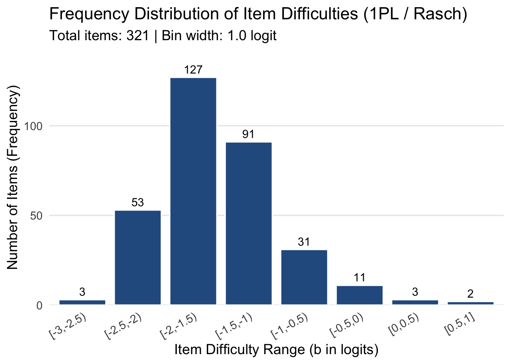
According to the new 1PL Model estimation, of the 321 items evaluated in the model, only 5 items have positive difficulty parameters.
B.2 Model fit
Due to huge sample size, and CAT algorithm, Chi Square test will not work, as it is sample size dependent. Whereas, Mean Square (MSQ) is sample independent and acts as a measure of effect size. Items in teh CAT system are not Missing Completely at Random (NCAR)
B.2 Person-Item Map (Wright Map) for 1PL analysis
# 1. Extract 1PL person thetas (EAP estimates)
person_thetas <- fscores(fit_1pl, method = "EAP")[, "F1"]
# 2. Extract 1PL item difficulties (b parameter on the IRT metric)
item_difficulties <- coef(fit_1pl, IRTpars = TRUE, simplify = TRUE)$items[, "b"]
# 3. Generate the 1PL Wright Map
wrightMap(
thetas = person_thetas,
thresholds = item_difficulties,
main.title = "Wright Map: 1PL Items vs. Person Ability",
axis.persons = "Person Ability (Theta)",
axis.items = "Item Difficulty (b)",
show.item.names = TRUE,
label.items.srt = 45, # 45-degree angle to keep item codes legible
label.items.cex = 0.6 # Scale text size
)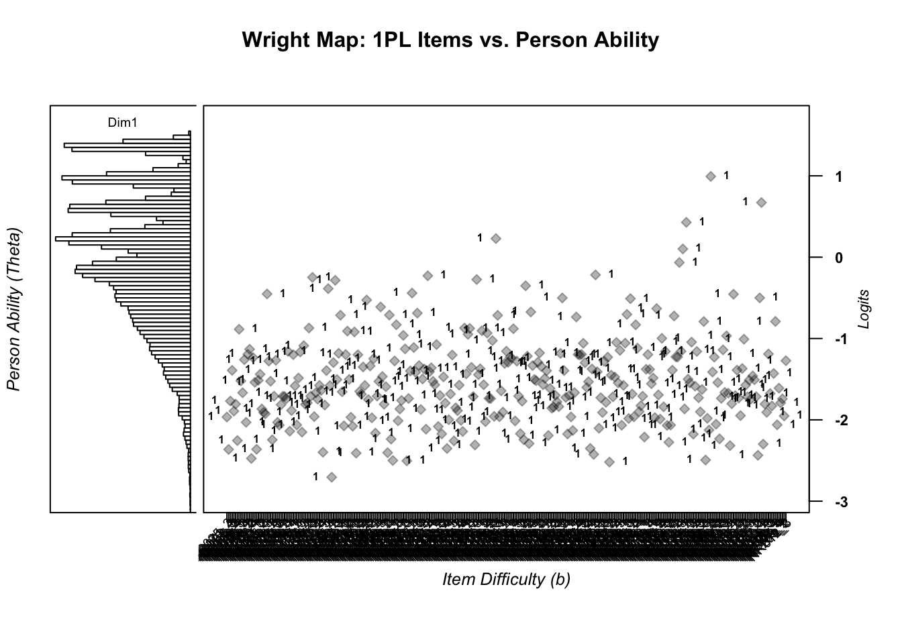
[,1]
NR025_2 -1.96559950
NR171_4 -2.36409256
NR023_3 -1.76900128
NR152_3 -1.39168630
NR015_2 -1.89320330
NR053_4 -1.80616195
NR018_4 -2.25494480
NR162_3 -0.88640501
NR049_1 -1.52142606
NR017_3 -1.66667176
NR090_4 -1.26066136
NR185_1 -2.03019007
NR043_2 -1.19424950
NR080_2 -1.13207102
NR196_3 -2.47451228
NR021_4 -1.23502888
NR197_1 -1.53813136
NR207_1 -2.36187389
NR016_3 -1.51434522
NR043_3 -1.43981702
NR127_2 -1.86601386
NR021_3 -1.90952755
NR105_1 -1.92553063
NR051_3 -0.45237435
NR088_1 -1.27779431
NR010_1 -1.52540947
NR184_2 -2.24555550
NR010_4 -1.70921127
NR164_3 -1.26772340
NR022_2 -2.03051623
NR075_2 -2.06513652
NR170_1 -1.81405336
NR057_1 -1.71103090
NR148_2 -1.71210422
NR168_3 -1.74084828
NR120_1 -1.15800469
NR166_1 -2.13937362
NR160_4 -1.88495561
NR136_1 -1.19844004
NR174_1 -1.58276818
NR046_2 -2.06347679
NR116_1 -1.48546810
NR177_3 -1.16524997
NR153_1 -2.15095475
NR170_2 -1.08803415
NR037_1 -1.81057505
NR175_2 -1.79180087
NR073_2 -0.87128690
NR185_3 -1.70855450
NR210_3 -0.24851813
NR087_2 -1.96036596
NR040_1 -1.66639261
NR195_2 -1.74591631
NR107_3 -1.57664492
NR012_4 -1.63805514
NR140_1 -2.39848065
NR014_3 -1.81831532
NR074_1 -1.39360493
NR174_2 -0.38714116
NR095_1 -1.57892433
NR033_1 -2.70539557
NR095_2 -1.29609209
NR211_3 -0.28480194
NR090_3 -1.50484103
NR042_3 -1.18201021
NR156_2 -0.71395665
NR087_1 -1.65546655
NR102_3 -2.07355213
NR079_2 -1.19705960
NR049_2 -0.90886751
NR084_2 -1.50335559
NR021_2 -1.96825150
NR171_1 -2.07800202
NR094_3 -0.91912405
NR018_2 -2.40906604
NR010_2 -1.19989810
NR195_3 -1.65035809
NR047_2 -1.68476862
NR156_4 -1.34992596
NR162_2 -1.57761207
NR023_2 -0.52678966
NR079_3 -1.75127801
NR099_2 -1.33719853
NR184_3 -1.97499355
NR148_1 -1.24814948
NR040_2 -2.16337585
NR097_1 -1.70780178
NR049_4 -1.52790542
NR047_3 -0.61183085
NR081_1 -1.46759403
NR030_1 -1.80825815
NR198_2 -1.59273737
NR019_2 -2.40401139
NR050_1 -0.71177313
NR022_1 -2.23675212
NR184_1 -2.49963591
NR079_1 -1.27599486
NR090_2 -0.83122707
NR026_3 -2.01208723
NR013_1 -1.86658563
NR119_1 -1.76157058
NR088_2 -0.96133190
NR027_3 -1.12768590
NR160_3 -2.50451262
NR177_1 -1.73763251
NR198_1 -1.39914186
NR033_2 -0.44164718
NR042_1 -1.11050409
NR015_1 -1.41514239
NR007_3 -0.68780880
NR064_3 -1.33317346
NR020_4 -1.87330472
NR143_2 -1.49764993
NR037_3 -1.37553654
NR128_1 -2.11462946
NR117_2 -0.22904484
NR152_4 -1.40842394
NR122_1 -1.36002542
NR047_1 -1.52646237
NR111_1 -1.56941614
NR210_4 -1.07428386
NR053_2 -2.08187818
NR030_3 -1.70054748
NR171_3 -2.17257217
NR142_2 -1.47179472
NR153_4 -1.79440448
NR003_1 -2.35205943
NR207_4 -1.99876628
NR002_1 -1.68199593
NR002_3 -1.20255764
NR200_1 -2.25868324
NR179_1 -1.85166247
NR062_2 -1.88713917
NR170_4 -1.57305361
NR209_3 -2.00690527
NR057_4 -2.14296783
NR162_4 -0.87135237
NR012_1 -1.43425753
NR179_2 -0.94885794
NR156_3 -0.87628524
NR090_1 -1.35489497
NR025_3 -1.71379859
NR209_4 -2.30870140
NR062_3 -0.27491637
NR156_1 -1.44455001
NR194_1 -1.37228783
NR117_1 -0.90460775
NR106_3 -1.56856679
NR206_2 -2.02217327
NR043_4 -0.93299924
NR083_2 -1.73566474
NR106_2 -1.73834586
NR179_3 -1.02604969
NR019_3 -1.95705595
NR176_3 0.22871079
NR109_5 -0.71530656
NR084_1 -1.96206461
NR051_1 -1.64285460
NR101_4 -1.90459075
NR017_2 -1.30680245
NR063_1 -1.15592783
NR131_1 -1.29312163
NR055_1 -1.23141928
NR100_1 -1.23932374
NR050_4 -0.87975253
NR172_4 -2.01347000
NR015_3 -1.27869951
NR026_1 -1.70716926
NR133_3 -2.17048074
NR152_2 -1.77066386
NR065_2 -2.24407382
NR192_1 -0.35191816
NR074_2 -1.21694342
NR020_2 -2.29136031
NR051_4 -0.67379003
NR186_3 -1.33275929
NR046_1 -1.50359010
NR030_4 -1.51843585
NR130_2 -1.29259629
NR063_2 -1.17728417
NR120_2 -1.34394186
NR099_1 -1.56745376
NR112_1 -1.49074314
NR072_2 -1.39687280
NR132_1 -2.19254599
NR200_2 -1.61351287
NR011_3 -1.85632942
NR212_2 -1.84312011
NR099_3 -1.69899306
NR089_3 -1.77864237
NR098_4 -1.83729286
NR098_3 -1.18308963
NR192_2 -0.50115084
NR207_2 -1.39477208
NR070_1 -1.72461516
NR038_1 -2.17414608
NR092_1 -1.69981826
NR082_1 -1.96387371
NR108_4 -2.13097948
NR007_1 -1.66583939
NR094_2 -0.73534890
NR174_4 -1.19586703
NR212_4 -1.20232977
NR058_3 -1.19500561
NR177_2 -1.05857192
NR207_3 -1.29782325
NR089_2 -1.60155191
NR037_4 -1.53140246
NR209_1 -2.35142613
NR105_4 -1.37449543
NR160_2 -2.42439611
NR060_3 -0.21783316
NR194_2 -1.40896324
NR212_1 -2.10294266
NR087_3 -1.72783556
NR176_2 -1.90965703
NR066_3 -1.27965385
NR204_3 -1.78503610
NR072_1 -1.22938958
NR026_2 -2.51923160
NR048_2 -1.45137036
NR210_1 -1.71647404
NR057_2 -1.47273906
NR097_4 -1.04830741
NR018_1 -1.54614533
NR143_3 -1.14603384
NR162_1 -2.06612766
NR059_1 -1.57553402
NR009_1 -1.05689249
NR013_3 -0.70369505
NR092_3 -1.98339642
NR076_1 -0.50989426
NR181_2 -1.68214596
NR175_3 -1.96253169
NR050_2 -0.83140887
NR065_1 -1.11766501
NR102_1 -1.89833979
NR152_1 -1.82576315
NR211_1 -1.70983575
NR083_1 -2.21151841
NR071_1 -1.37837055
NR076_3 -1.19779361
NR148_4 -1.37995017
NR014_1 -1.55549168
NR173_1 -1.48531632
NR089_1 -1.97236322
NR164_4 -0.63222557
NR070_2 -1.69319261
NR098_2 -1.99039558
NR035_4 -0.99797843
NR167_2 -1.84008053
NR212_3 -1.15832229
NR095_3 -2.06823511
NR196_2 -2.27552314
NR140_2 -2.06436314
NR014_2 -1.38968460
NR066_1 -0.72320774
NR051_2 -1.22573287
NR010_3 -1.22783147
NR168_4 -0.06553056
NR173_3 -1.15649010
NR064_1 0.10104373
NR053_1 -1.86590383
NR116_2 0.42821658
NR121_1 -1.50030578
NR174_3 -1.54571082
NR035_2 -1.04456616
NR108_1 -2.17616008
NR173_2 -1.58562798
NR175_4 -1.15896177
NR053_3 -1.72842330
NR049_3 -1.90186297
NR103_2 -1.62679725
NR038_3 -0.79119818
NR100_3 -2.49395141
NR019_1 -1.98134358
NR082_2 -2.12526134
NR059_2 0.99299089
NR066_2 -1.41237109
NR105_2 -1.22876230
NR181_3 -2.05357485
NR186_2 -1.54155492
NR030_2 -2.23359474
NR018_3 -1.73588656
NR057_3 -1.13979366
NR070_3 -1.66224495
NR123_2 -0.96747954
NR044_1 -1.67238395
NR164_2 -2.31698197
NR164_1 -1.80126304
NR060_1 -0.45557719
NR118_2 -1.70210301
NR111_2 -1.38824861
NR037_2 -1.73199405
NR103_1 -1.94825183
NR136_2 -1.36908728
NR112_2 -1.00849573
NR071_2 -1.57241297
NR167_1 -1.71805254
NR065_3 -1.51143079
NR130_1 -1.74404719
NR175_1 -1.46011010
NR167_3 -1.50768562
NR027_2 -1.71482528
NR075_3 -2.43573673
NR017_1 -0.50031541
NR167_4 0.67110260
NR100_2 -2.29885891
NR093_4 -1.80581038
NR103_3 -1.90758430
NR035_3 -1.19039944
NR022_3 -1.67636389
NR100_4 -1.82813156
NR103_4 -1.42969818
NR020_3 -0.79034505
NR102_4 -2.06096793
NR107_4 -1.61057766
NR169_4 -1.79203503
NR169_2 -1.74188867
NR209_2 -1.95225813
NR012_3 -1.27294570The left panel represents person distribution while the right panel represents Item difficulty values. Because the person distribution sits clearly higher than the item distribution (\(\bar{\theta} > \bar{b}\)), it is obvious that the test is very easy in its current state.
B.3 Item Parameter Drift
CSNT_ItemParameter2021_Usage2026 <- read_excel("~/Desktop/Datasets/2026_CSNT_ItemParameter2021_Usage2026.xlsx")
View(CSNT_ItemParameter2021_Usage2026)# 1. Convert the matrix to a tibble and pull row names into an 'Item' column
item_params_df <- item_params %>%
as.data.frame() %>%
rownames_to_column(var = "Item") %>%
as_tibble()
# 2. Join the two difficulty parameters
matched_difficulties <- inner_join(
item_params_df %>% select(Item, Difficulty_b = b),
CSNT_ItemParameter2021_Usage2026 %>% select(Item_id, Item_Difficulty),
by = c("Item" = "Item_id")
)
# 3. Compute paired summary statistics
comparison_summary <- matched_difficulties %>%
summarise(
Active_Items = n(),
Mean_2026_Diff = mean(Difficulty_b, na.rm = TRUE),
SD_2026_Diff = sd(Difficulty_b, na.rm = TRUE),
Mean_2021_Diff = mean(Item_Difficulty, na.rm = TRUE),
SD_2021_Diff = sd(Item_Difficulty, na.rm = TRUE),
Mean_Difference = mean(Difficulty_b - Item_Difficulty, na.rm = TRUE),
Correlation = cor(Difficulty_b, Item_Difficulty, use = "complete.obs")
)
print(comparison_summary)# A tibble: 1 × 7
Active_Items Mean_2026_Diff SD_2026_Diff Mean_2021_Diff SD_2021_Diff
<int> <dbl> <dbl> <dbl> <dbl>
1 321 -1.51 0.556 0.0250 0.980
# ℹ 2 more variables: Mean_Difference <dbl>, Correlation <dbl>While mean difficulty of CSNT_2021_Norm is 0.025, the new 1PL analysis average difficulty parameter stands at -1.51, representing an item drift of -1.76
Item Characteristic Curve
# 1. Extract item difficulties
b_params <- coef(fit_1pl, IRTpars = TRUE, simplify = TRUE)$items[, "b"]
# 2. Generate ability grid (-4 to +4 logits)
theta_seq <- seq(-4, 4, length.out = 200)
# 3. Calculate Rasch probability: P(Theta) = 1 / (1 + exp(-(Theta - b)))
icc_data <- expand_grid(
item_id = names(b_params),
theta = theta_seq
) %>%
mutate(
b = b_params[item_id],
prob = 1 / (1 + exp(-(theta - b)))
)
# 4. Plot overlaid ICCs
ggplot(icc_data, aes(x = theta, y = prob, group = item_id)) +
geom_line(alpha = 0.5, color = "#2b5c8f", linewidth = 0.7) +
geom_hline(yintercept = 0.5, linetype = "dashed", color = "grey50") +
scale_y_continuous(limits = c(0, 1), breaks = seq(0, 1, 0.2)) +
labs(
title = "Item Characteristic Curves (Overlaid)",
subtitle = "Dashed line marks P = 0.5 (Item Difficulty Threshold b)",
x = "Latent Trait Ability (Theta)",
y = "Probability of Correct Response P(Theta)"
) +
theme_minimal(base_size = 12)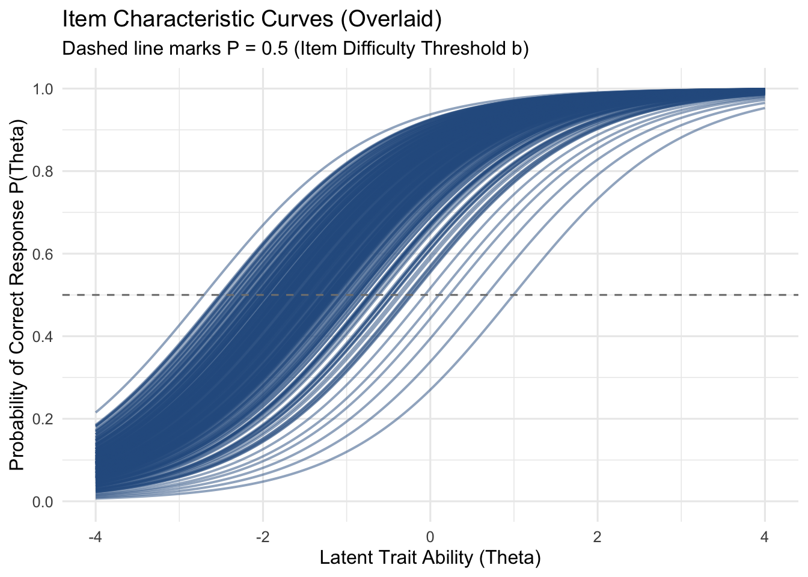
This item bank is good for only lower ability groups. A huge number of items measure very similar lower ability levels. Items concentrate heavily between \(\theta = -3.0\) and \(\theta = -1.0\).
CSNT item bank consists of easy items. There is practically no item as ability exceeds +1.0. It will be very difficult to identify normal or high performing candidates with this set of items. While this is not the underlying goal of the test, it prevents a healthy distribution.
# 1. Extract Person Abilities & Item Difficulties
# -------------------------------------------------------------
person_thetas <- fscores(fit_1pl, method = 'EAP')[, "F1"]
person_df <- tibble(theta = person_thetas)
b_params <- coef(fit_1pl, IRTpars = TRUE, simplify = TRUE)$items[, "b"]
theta_grid <- seq(-4, 4, length.out = 200)
icc_data <- expand_grid(
item_id = names(b_params),
theta = theta_grid
) %>%
mutate(
b = b_params[item_id],
prob = 1 / (1 + exp(-(theta - b)))
)
# -------------------------------------------------------------
# 2. Plot A: Item Characteristic Curves
# -------------------------------------------------------------
p_icc <- ggplot(icc_data, aes(x = theta, y = prob, group = item_id)) +
geom_line(alpha = 0.45, color = "#2b5c8f", linewidth = 0.6) +
geom_hline(yintercept = 0.5, linetype = "dashed", color = "grey40") +
scale_x_continuous(limits = c(-4, 4), breaks = seq(-4, 4, 1)) +
scale_y_continuous(limits = c(0, 1), breaks = seq(0, 1, 0.2)) +
labs(
title = "Targeting Alignment: Item Curves vs. Person Ability Distribution",
subtitle = "Dashed line indicates P = 0.5 (Item Difficulty Threshold b)",
x = NULL,
y = "Probability P(Theta)"
) +
theme_minimal(base_size = 11) +
theme(
axis.text.x = element_blank(), # Hidden to align with density plot below
panel.grid.minor = element_blank()
)
# -------------------------------------------------------------
# 3. Plot B: Person Ability Density (Sample Population)
# -------------------------------------------------------------
p_density <- ggplot(person_df, aes(x = theta)) +
geom_density(fill = "#e07a5f", color = "#c45d42", alpha = 0.6, adjust = 1.2) +
geom_vline(
xintercept = mean(person_thetas, na.rm = TRUE),
color = "#8b2610", linetype = "dashed", linewidth = 0.8
) +
scale_x_continuous(limits = c(-4, 4), breaks = seq(-4, 4, 1)) +
scale_y_continuous(expand = expansion(mult = c(0, 0.05))) +
labs(
x = "Latent Trait Ability (Theta)",
y = "Person Density"
) +
theme_minimal(base_size = 11) +
theme(
panel.grid.minor = element_blank()
)
# -------------------------------------------------------------
# 4. Combine Both Stacked Plots (Shared X-axis)
# -------------------------------------------------------------
# Requires patchwork (install.packages("patchwork") if needed)
combined_plot <- p_icc / p_density + plot_layout(heights = c(3, 1))
combined_plotWarning: Removed 6 rows containing non-finite outside the scale range
(`stat_density()`).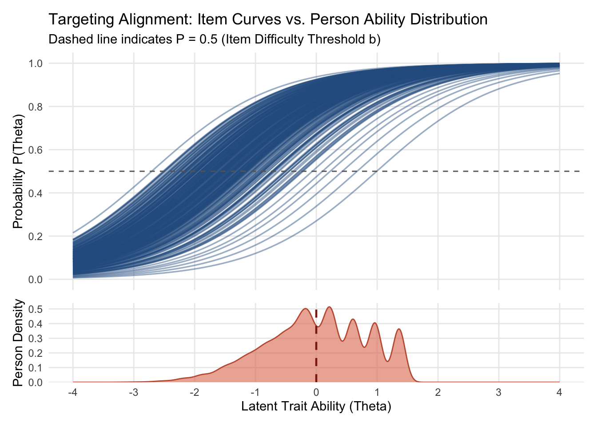
C. Local Independence-item Correlations
# 1. CAT-ADJUSTED YEN'S Q3 LOCAL INDEPENDENCE EVALUATION
# ==============================================================================
if (!exists("fit_1pl")) {
stop("Model object 'fit_1pl' not found.")
}
resp_mat <- extract.mirt(fit_1pl, "data")
theta_est <- fscores(fit_1pl, method = "EAP", full.scores.SE = FALSE)
# Subsample 25,000 candidates for memory safety (24 GB limit)
set.seed(2026)
if (nrow(resp_mat) > 25000) {
idx <- sample(seq_len(nrow(resp_mat)), 25000)
resp_sub <- resp_mat[idx, ]
theta_sub <- theta_est[idx, , drop = FALSE]
} else {
resp_sub <- resp_mat
theta_sub <- theta_est
}
# Compute residuals: Observed (0/1) - Expected Probability P(X = 1 | theta)
item_names <- colnames(resp_sub)
resid_mat <- matrix(NA_real_, nrow = nrow(resp_sub), ncol = length(item_names))
colnames(resid_mat) <- item_names
for (j in seq_along(item_names)) {
extr_item <- extract.item(fit_1pl, j)
exp_prob <- probtrace(extr_item, theta_sub)[, 2]
resid_mat[, j] <- resp_sub[, j] - exp_prob
}
# Compute pairwise sample sizes N_jk (how many candidates took BOTH items)
valid_ind <- !is.na(resid_mat)
n_pair_mat <- crossprod(valid_ind)
# Compute Q3 correlation matrix
q3_matrix <- cor(resid_mat, use = "pairwise.complete.obs")
diag(q3_matrix) <- NA
# Combine Q3 and N_jk into long table, filtering for N_jk >= 100
q3_df <- as.data.frame(as.table(q3_matrix), stringsAsFactors = FALSE) %>%
rename(Item_1 = Var1, Item_2 = Var2, Q3 = Freq)
n_df <- as.data.frame(as.table(n_pair_mat), stringsAsFactors = FALSE) %>%
rename(Item_1 = Var1, Item_2 = Var2, N_Pair = Freq)
q3_cat_pairs <- q3_df %>%
inner_join(n_df, by = c("Item_1", "Item_2")) %>%
filter(!is.na(Q3), Item_1 < Item_2, N_Pair >= 100)
# Compute CAT routing baseline (mean Q3) and centered threshold
cat_baseline_q3 <- mean(q3_cat_pairs$Q3, na.rm = TRUE)
cat_cutoff_q3 <- cat_baseline_q3 + 0.20
q3_cat_pairs <- q3_cat_pairs %>%
mutate(
Stem_1 = sub("_.*$", "", Item_1),
Stem_2 = sub("_.*$", "", Item_2),
Same_Stem = ifelse(Stem_1 == Stem_2, "Yes (Testlet)", "No"),
Q3_Centered = round(Q3 - cat_baseline_q3, 4),
Status = ifelse(Q3 > cat_cutoff_q3, "Flagged (Centered Q3 > 0.20)", "Independent")
)
q3_cat_flagged <- q3_cat_pairs %>%
filter(Q3 > cat_cutoff_q3) %>%
mutate(Q3 = round(Q3, 4)) %>%
arrange(desc(Q3_Centered))
# ==============================================================================
# 2. HISTOGRAM OF CAT-ADJUSTED Q3 DISTRIBUTION
# ==============================================================================
theme_clean_report <- theme_minimal(base_size = 12) +
theme(
plot.background = element_rect(fill = "white", color = NA),
panel.background = element_rect(fill = "white", color = NA),
panel.grid.major = element_line(color = "#e2e8f0", linewidth = 0.5),
panel.grid.minor = element_blank(),
axis.text = element_text(color = "#1e293b", size = 10),
axis.title = element_text(color = "#0f172a", face = "bold"),
plot.title = element_text(color = "#0f172a", face = "bold", size = 14),
plot.subtitle = element_text(color = "#475569", size = 11),
legend.position = "top"
)
p_q3_hist <- ggplot(q3_cat_pairs, aes(x = Q3, fill = Status)) +
# Shaded violation region to the right of the threshold
annotate("rect", xmin = cat_cutoff_q3, xmax = Inf, ymin = 0, ymax = Inf,
fill = "#fee2e2", alpha = 0.45) +
geom_histogram(bins = 60, color = "white", alpha = 0.9) +
# Baseline mean vertical line
geom_vline(xintercept = cat_baseline_q3, linetype = "dashed", color = "#1e293b", linewidth = 0.9) +
# Critical threshold vertical line (Baseline + 0.20)
geom_vline(xintercept = cat_cutoff_q3, linetype = "dashed", color = "#dc2626", linewidth = 1.0) +
# Annotations for vertical reference lines
annotate("text", x = cat_baseline_q3 - 0.015, y = Inf, vjust = 1.6, hjust = 1,
label = paste0("CAT Baseline Mean = ", round(cat_baseline_q3, 3)),
color = "#1e293b", fontface = "bold", size = 3.5) +
annotate("text", x = cat_cutoff_q3 + 0.015, y = Inf, vjust = 3.2, hjust = 0,
label = paste0("LD Threshold (+0.20) = ", round(cat_cutoff_q3, 3)),
color = "#dc2626", fontface = "bold", size = 3.5) +
scale_fill_manual(
values = c("Independent" = "#3b82f6", "Flagged (Centered Q3 > 0.20)" = "#dc2626"),
name = "Local Independence Status:"
) +
labs(
title = "Distribution of Pairwise Yen's Q3 Residual Correlations (CAT Item Bank)",
subtitle = paste0("Evaluated across ", format(nrow(q3_cat_pairs), big.mark = ","),
" item pairs with N >= 100 co-administrations"),
x = "Pairwise Residual Correlation (Yen's Q3)",
y = "Number of Item Pairs"
) +
theme_clean_report
print(p_q3_hist)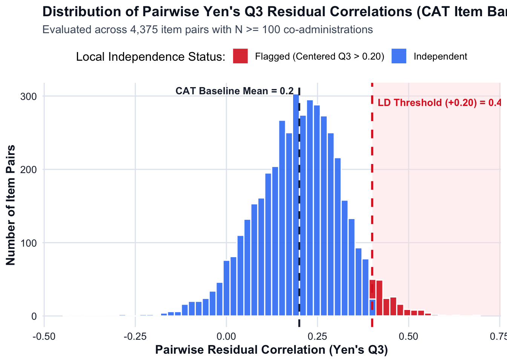
# ==============================================================================
# 3. QUARTO SUMMARY REPORT & FLAGGED PAIRS TABLE
# ==============================================================================
cat("\n## CAT-Adjusted Local Independence Evaluation (Yen's Q3)\n\n")
## CAT-Adjusted Local Independence Evaluation (Yen's Q3)cat("- **Item pairs with N >= 100 co-administrations:**", nrow(q3_cat_pairs), "\n")- **Item pairs with N >= 100 co-administrations:** 4375 cat("- **CAT routing baseline (Mean off-diagonal Q3):**", round(cat_baseline_q3, 4), "\n")- **CAT routing baseline (Mean off-diagonal Q3):** 0.1999 cat("- **Critical LD cutoff threshold (Baseline + 0.20):**", round(cat_cutoff_q3, 4), "\n")- **Critical LD cutoff threshold (Baseline + 0.20):** 0.3999 cat("- **Flagged local dependence violations (Q3 - Baseline > 0.20):**", nrow(q3_cat_flagged), "\n\n")- **Flagged local dependence violations (Q3 - Baseline > 0.20):** 176 if (nrow(q3_cat_flagged) == 0) {
cat("> **Result:** No item pairs exceed the CAT-adjusted local dependence threshold ($Q_3 - \\bar{Q}_3 > 0.20$). Local independence is supported across the adaptive item bank.\n\n")
} else {
print(
kable(
head(q3_cat_flagged, 25) %>%
select(Item_1, Item_2, Same_Stem, N_Pair, Q3, Q3_Centered),
col.names = c("Item 1", "Item 2", "Shared Stimulus?", "Co-Admin N", "Raw Q3", "Centered Q3 (Q3 - Baseline)"),
caption = "Item Pairs Exceeding CAT-Adjusted Local Dependence Threshold (Centered Q3 > 0.20)"
)
)
cat("\n\n")
}
Table: Item Pairs Exceeding CAT-Adjusted Local Dependence Threshold (Centered Q3 > 0.20)
|Item 1 |Item 2 |Shared Stimulus? | Co-Admin N| Raw Q3| Centered Q3 (Q3 - Baseline)|
|:-------|:-------|:----------------|----------:|------:|---------------------------:|
|NR050_1 |NR050_4 |Yes (Testlet) | 388| 0.6867| 0.4868|
|NR007_1 |NR020_3 |No | 167| 0.6298| 0.4299|
|NR050_1 |NR050_2 |Yes (Testlet) | 255| 0.5859| 0.3860|
|NR018_2 |NR170_2 |No | 111| 0.5758| 0.3758|
|NR026_3 |NR089_2 |No | 100| 0.5640| 0.3641|
|NR013_3 |NR079_1 |No | 207| 0.5618| 0.3618|
|NR066_1 |NR186_3 |No | 102| 0.5613| 0.3614|
|NR084_2 |NR090_4 |No | 127| 0.5591| 0.3592|
|NR007_3 |NR186_3 |No | 116| 0.5503| 0.3504|
|NR079_3 |NR170_2 |No | 209| 0.5434| 0.3435|
|NR057_1 |NR192_1 |No | 105| 0.5385| 0.3386|
|NR002_1 |NR018_3 |No | 107| 0.5342| 0.3343|
|NR013_3 |NR209_1 |No | 107| 0.5326| 0.3327|
|NR057_2 |NR170_2 |No | 133| 0.5324| 0.3325|
|NR087_2 |NR170_2 |No | 111| 0.5273| 0.3274|
|NR057_2 |NR065_2 |No | 128| 0.5254| 0.3255|
|NR010_1 |NR079_1 |No | 105| 0.5249| 0.3250|
|NR003_1 |NR007_1 |No | 130| 0.5187| 0.3188|
|NR020_2 |NR094_3 |No | 109| 0.5172| 0.3173|
|NR090_4 |NR093_4 |No | 105| 0.5157| 0.3158|
|NR013_3 |NR015_3 |No | 118| 0.5105| 0.3106|
|NR170_2 |NR207_4 |No | 114| 0.5087| 0.3087|
|NR007_1 |NR079_1 |No | 141| 0.5065| 0.3066|
|NR057_2 |NR192_1 |No | 102| 0.5058| 0.3059|
|NR081_1 |NR186_3 |No | 134| 0.5059| 0.3059|# Clean up large temporary matrices
rm(resp_mat, resp_sub, resid_mat, valid_ind, n_pair_mat)
gc() used (Mb) gc trigger (Mb) limit (Mb) max used (Mb)
Ncells 4995335 266.8 8569646 457.7 NA 8569646 457.7
Vcells 1371814459 10466.2 2280319427 17397.5 24576 1621342154 12369.9Sufficiently Sampled Pairs (\(N \ge 100\)): Filtering out sparsely co-administered CAT pairs narrowed the evaluation from 31,726 noisy pairs down to 4,375 reliable item pairs.
CAT Routing Baseline (\(\bar{Q}_3 = 0.1999\)): The adaptive item selection algorithm induces a predictable positive residual correlation baseline of \(\approx 0.20\) across co-administered items.
Critical Threshold (\(0.3999\)): Adding the standard \(+0.20\) Christensen et al. (2017) margin places the true local dependence cutoff at \(Q_3 > 0.40\).
Strong Overall Local Independence (\(96.0\%\) Clean): Out of 4,375 reliably co-administered item pairs, 4,199 pairs (\(96.0\%\)) satisfy local independence, while only 176 pairs (\(4.0\%\)) exhibit excess residual correlation (\(Q_3 - \bar{Q}_3 > 0.20\)).
176 flagged pairs typically fall into one of two distinct buckets:
Intentional Testlets (Shared Data Tables / Charts): Multiple questions linked to the same stimulus block
True Item Redundancy / Clueing (Different Stems): Two supposedly independent items from different stimuli that share an identical calculation trap
D. Adverse Impact
Analysis carried out for main diversity/protected groups do not show an adverse impact up to 80th percentiles
D.1 Distribution of Diversity Groups based on grades
# 1. VERIFY DATA & DEFINE TARGET GRADES AND VARIABLES
if (!exists("CSNT_Complete_Item_Diversity_Clean_2025")) {
stop("CSNT_Complete_Item_Diversity_Clean_2025 is not present in the workspace.")
}
target_grades <- c(
"Administrative Officer",
"Executive Officer",
"Higher Executive Officer",
"Senior Executive Officer",
"Grade 7",
"Grade 6"
)
diversity_vars <- c(
"gender",
"disability",
"application_form_applicant_type",
"select_your_ethnicity",
"what_is_your_sexual_orientation",
"select_your_ethnic_group",
"select_your_current_age_group",
"what_is_your_religion_or_belief",
"were_you_eligible_for_free_school_meals_at_any_point"
)
# Identify grade column name safely
col_grade <- intersect(
c("job_grade_clean", "job_grade.x", "job_grade", "Job_Grade", "Grade"),
colnames(CSNT_Complete_Item_Diversity_Clean_2025)
)[1]
# Verify all diversity variables exist in the dataset
missing_vars <- setdiff(diversity_vars, colnames(CSNT_Complete_Item_Diversity_Clean_2025))
if (length(missing_vars) > 0) {
warning("The following variables were not found in the dataset and will be skipped: ", paste(missing_vars, collapse = ", "))
diversity_vars <- intersect(diversity_vars, colnames(CSNT_Complete_Item_Diversity_Clean_2025))
}
# 2. COMPUTE FREQUENCIES FOR EACH GRADE & DIVERSITY VARIABLE
grade_sheet_mapping <- list(
"Administrative Officer" = "Admin Officer",
"Executive Officer" = "Exec Officer",
"Higher Executive Officer" = "Higher Exec Officer",
"Senior Executive Officer" = "Senior Exec Officer",
"Grade 7" = "Grade 7",
"Grade 6" = "Grade 6"
)
wb <- createWorkbook()
for (full_grade in target_grades) {
sheet_name <- grade_sheet_mapping[[full_grade]]
addWorksheet(wb, sheet_name)
# Filter data for current grade
grade_df <- CSNT_Complete_Item_Diversity_Clean_2025 %>%
filter(.data[[col_grade]] == full_grade)
start_row <- 1
for (var_name in diversity_vars) {
# Compute frequency table including missing/NA/NULL values explicitly
var_freq <- grade_df %>%
mutate(Category = as.character(.data[[var_name]])) %>%
mutate(Category = ifelse(is.na(Category) | Category == "" | Category == "NULL", "Missing / Not Stated", Category)) %>%
group_by(Category) %>%
summarise(Frequency = n(), .groups = "drop") %>%
mutate(
Percentage = round(Frequency / sum(Frequency) * 100, 2),
Variable = var_name
) %>%
arrange(desc(Frequency)) %>%
select(Variable, Category, Frequency, Percentage)
# Write header title for this variable section
writeData(wb, sheet_name, paste0("Variable: ", var_name), startRow = start_row, startCol = 1)
# Write data frame table
writeData(wb, sheet_name, var_freq, startRow = start_row + 1, startCol = 1)
# Add spacing between variable tables
start_row <- start_row + nrow(var_freq) + 4
}
}
# 3. SAVE WORKBOOK
excel_filename <- "CSNT_Diversity_Group_Frequencies_by_Grade2025.xlsx"
saveWorkbook(wb, excel_filename, overwrite = TRUE)
cat("\nWorkbook successfully saved with separate sheets for each grade:", excel_filename, "\n")
Workbook successfully saved with separate sheets for each grade: CSNT_Diversity_Group_Frequencies_by_Grade2025.xlsx # 4. PREVIEW FREQUENCY TABLE IN QUARTO REPORT (E.G., ADMINISTRATIVE OFFICER)
cat("### Sample Frequency Preview: Administrative Officer (Gender & Disability)\n")### Sample Frequency Preview: Administrative Officer (Gender & Disability)preview_df <- CSNT_Complete_Item_Diversity_Clean_2025 %>%
filter(.data[[col_grade]] == "Administrative Officer") %>%
select(gender, disability) %>%
pivot_longer(cols = everything(), names_to = "Variable", values_to = "Category") %>%
mutate(Category = ifelse(is.na(Category) | Category == "" | Category == "NULL", "Missing / Not Stated", Category)) %>%
group_by(Variable, Category) %>%
summarise(Frequency = n(), .groups = "drop_last") %>%
mutate(Percentage = round(Frequency / sum(Frequency) * 100, 2))
kable(preview_df, caption = "Frequency Breakdown Preview for Administrative Officer")| Variable | Category | Frequency | Percentage |
|---|---|---|---|
| disability | No | 20604 | 85.54 |
| disability | Prefer not to disclose | 1033 | 4.29 |
| disability | Yes | 2449 | 10.17 |
| gender | Man | 12074 | 50.13 |
| gender | Prefer not to disclose | 560 | 2.33 |
| gender | Prefer to self-describe | 96 | 0.40 |
| gender | Woman | 11356 | 47.15 |
Setting new percentiles based on new theta estimation.
# 1. Add percentile ranks and a threshold pass flag (e.g., 30th percentile cut-off)
# Adjust 'pass_threshold_pctl' to match your Civil Service operational cut-score
pass_threshold_pctl <- 30
CSNT_Final_With_Scores <- CSNT_Final_With_Scores %>%
filter(!is.na(theta_1PL_new)) %>%
mutate(
# Percentile rank from 0 to 100
percentile_1PL = round(percent_rank(theta_1PL_new) * 100, 2),
# Binary selection indicator (1 = Pass / Selected, 0 = Did not meet cut-score)
passed_cut = if_else(percentile_1PL >= pass_threshold_pctl, 1, 0)
)
# Verify percentile distribution
summary(CSNT_Final_With_Scores$percentile_1PL) Min. 1st Qu. Median Mean 3rd Qu. Max.
0.00 24.94 49.95 49.97 74.97 100.00 Correlation between current percentile and newly calculated 1PL theta percentiles
# Fast, in-place conversion (only runs once, does nothing if already numeric)
if (!is.numeric(CSNT_Final_With_Scores$NRTPercentileScore)) {
CSNT_Final_With_Scores$NRTPercentileScore <- as.numeric(CSNT_Final_With_Scores$NRTPercentileScore)
}# 1. Clear unused memory
gc() used (Mb) gc trigger (Mb) limit (Mb) max used (Mb)
Ncells 5015088 267.9 8569646 457.7 NA 8569646 457.7
Vcells 1376429971 10501.4 2738841801 20895.8 24576 2325601538 17743.0# 2. Extract and strictly force both vectors to numeric
x_raw <- suppressWarnings(as.numeric(CSNT_Final_With_Scores$percentile_1PL))
y_raw <- suppressWarnings(as.numeric(CSNT_Final_With_Scores$NRTPercentileScore))
# 3. Identify indices with complete, non-NA pairs
valid_idx <- which(!is.na(x_raw) & !is.na(y_raw))
# 4. Subset to valid observations
x_clean <- x_raw[valid_idx]
y_clean <- y_raw[valid_idx]
# Check types and counts
cat("Number of complete candidate pairs:", length(valid_idx), "\n")Number of complete candidate pairs: 2274703 cat("x is numeric:", is.numeric(x_clean), "\n")x is numeric: TRUE cat("y is numeric:", is.numeric(y_clean), "\n\n")y is numeric: TRUE # 5. Pearson correlation (fast and uses negligible memory)
cor_p <- cor(x_clean, y_clean, method = "pearson")
cat("Pearson correlation (r):", round(cor_p, 4), "\n")Pearson correlation (r): 0.0709 # 6. Clean up temporary vectors to free RAM
rm(x_raw, y_raw, x_clean, y_clean, valid_idx)
gc() used (Mb) gc trigger (Mb) limit (Mb) max used (Mb)
Ncells 5015195 267.9 8569646 457.7 NA 8569646 457.7
Vcells 1376430091 10501.4 2738841801 20895.8 24576 2325601538 17743.0The following protected groups besides External/Internal candidates were analysed.
1. Ethnicity; White (Ref.) - Other
2. Gender; Man(Ref.) - Woman
3. Disability; Yes - No (Ref.)
4. Religion; Christian(Ref.) - Other (This variable can be retested taking ‘No religion’ as the reference group)
5. External - Internal(Ref.)
6. Sexual Orientation; Heterosexual Straight (Ref.) – Other
7. SES*
Below is the table for the pass rates at specific percentiles for the existing NRTtheta scores for all grades.
# 1. IDENTIFY COLUMNS SAFELY & DEFINE TARGET GRADES
if (!exists("CSNT_Final_With_Scores")) {
stop("CSNT_Final_With_Scores is not present in the workspace.")
}
target_grades <- c(
"Administrative Officer",
"Executive Officer",
"Higher Executive Officer",
"Senior Executive Officer",
"Grade 7",
"Grade 6"
)
# Detect column names dynamically
col_grade <- intersect(
c("job_grade_clean", "job_grade.x", "job_grade", "Job_Grade", "Grade"),
colnames(CSNT_Final_With_Scores)
)[1]
col_score <- intersect(
c("NRTPercentileScore", "PercentileScore", "percentile_score", "Percentile"),
colnames(CSNT_Final_With_Scores)
)[1]
# 2. FILTER & COMPUTE PASS/FAIL COUNTS ACROSS CUTOFFS
thresholds <- c(35, 40, 45, 50)
pass_summary_multi <- CSNT_Final_With_Scores %>%
# Filter for the 6 target grades and non-missing scores
filter(.data[[col_grade]] %in% target_grades) %>%
mutate(
Grade = factor(.data[[col_grade]], levels = target_grades),
Score = as.numeric(as.character(.data[[col_score]]))
) %>%
filter(!is.na(Score)) %>%
# Calculate pass/fail status for each threshold across candidate records
group_by(Grade) %>%
summarise(
Total_Candidates = n(),
# 35th Percentile
Passed_35 = sum(Score >= 35),
Failed_35 = sum(Score < 35),
Pass_Rate_35_Pct = round(mean(Score >= 35) * 100, 2),
# 40th Percentile
Passed_40 = sum(Score >= 40),
Failed_40 = sum(Score < 40),
Pass_Rate_40_Pct = round(mean(Score >= 40) * 100, 2),
# 45th Percentile
Passed_45 = sum(Score >= 45),
Failed_45 = sum(Score < 45),
Pass_Rate_45_Pct = round(mean(Score >= 45) * 100, 2),
# 50th Percentile
Passed_50 = sum(Score >= 50),
Failed_50 = sum(Score < 50),
Pass_Rate_50_Pct = round(mean(Score >= 50) * 100, 2),
.groups = "drop"
) %>%
arrange(Grade)
# 3. DISPLAY SUMMARY TABLES
kable(
pass_summary_multi,
caption = "Pass Counts, Fail Counts, and Pass Rates (%) by Job Grade Across Percentile Cutoffs"
)| Grade | Total_Candidates | Passed_35 | Failed_35 | Pass_Rate_35_Pct | Passed_40 | Failed_40 | Pass_Rate_40_Pct | Passed_45 | Failed_45 | Pass_Rate_45_Pct | Passed_50 | Failed_50 | Pass_Rate_50_Pct |
|---|---|---|---|---|---|---|---|---|---|---|---|---|---|
| Administrative Officer | 24084 | 19548 | 4536 | 81.17 | 18803 | 5281 | 78.07 | 17964 | 6120 | 74.59 | 17169 | 6915 | 71.29 |
| Executive Officer | 52596 | 42400 | 10196 | 80.61 | 40536 | 12060 | 77.07 | 38337 | 14259 | 72.89 | 36108 | 16488 | 68.65 |
| Higher Executive Officer | 48904 | 38684 | 10220 | 79.10 | 36853 | 12051 | 75.36 | 34729 | 14175 | 71.01 | 32398 | 16506 | 66.25 |
| Senior Executive Officer | 5216 | 4094 | 1122 | 78.49 | 3898 | 1318 | 74.73 | 3646 | 1570 | 69.90 | 3407 | 1809 | 65.32 |
| Grade 7 | 2691 | 1891 | 800 | 70.27 | 1748 | 943 | 64.96 | 1620 | 1071 | 60.20 | 1458 | 1233 | 54.18 |
| Grade 6 | 79 | 64 | 15 | 81.01 | 62 | 17 | 78.48 | 58 | 21 | 73.42 | 51 | 28 | 64.56 |
There is no adverse impact in any protected group up to 50th percentile in the current parameter settings.
D.1 GENDER (1PL)
# 1. VERIFY DATA & PREPARE DATASET (GENDER)
# ========================================================================
if (!exists("CSNT_Final_With_Scores")) {
stop("CSNT_Final_With_Scores is not present in the environment.")
}
target_grades <- c(
"Administrative Officer",
"Executive Officer",
"Higher Executive Officer",
"Senior Executive Officer",
"Grade 7",
"Grade 6"
)
# Identify grade column safely
col_grade <- intersect(
c("job_grade", "job_grade.x", "Job_Grade", "Grade"),
colnames(CSNT_Final_With_Scores)
)[1]
# Support both percentile_1PL and percentile_1PL_new column names
col_pct <- intersect(
c("percentile_1PL_new", "percentile_1PL", "Percentile"),
colnames(CSNT_Final_With_Scores)
)[1]
if (is.na(col_pct)) {
stop("Percentile column not found. Run percent_rank() step first.")
}
# Filter for target grades, binary gender (Man vs. Woman), and non-missing scores
df_ai_prep <- CSNT_Final_With_Scores %>%
filter(.data[[col_grade]] %in% target_grades) %>%
filter(gender %in% c("Man", "Woman")) %>%
filter(!is.na(.data[[col_pct]]), !is.na(theta_1PL_new)) %>%
mutate(
Grade = factor(.data[[col_grade]], levels = target_grades),
Gender = factor(gender, levels = c("Man", "Woman")),
Percentile = round(as.numeric(.data[[col_pct]])) # Clean integers 0..100
) %>%
filter(Percentile >= 1, Percentile <= 99)
# 2. CALCULATE ADVERSE IMPACT RATIO FOR EACH PERCENTILE (1 TO 99) BY GRADE
# ========================================================================
# Step A: Grand totals per grade and gender (denominators)
total_counts_per_grade <- df_ai_prep %>%
group_by(Grade) %>%
summarise(
Grand_Total_Man = sum(Gender == "Man"),
Grand_Total_Woman = sum(Gender == "Woman"),
.groups = "drop"
)
# Step B: Counts and theta distribution per percentile
pct_counts <- df_ai_prep %>%
group_by(Grade, Percentile) %>%
summarise(
Count_Man = sum(Gender == "Man"),
Count_Woman = sum(Gender == "Woman"),
Mean_Theta_Man = mean(theta_1PL_new[Gender == "Man"], na.rm = TRUE),
Mean_Theta_Woman = mean(theta_1PL_new[Gender == "Woman"], na.rm = TRUE),
SD_Theta_Man = sd(theta_1PL_new[Gender == "Man"], na.rm = TRUE),
SD_Theta_Woman = sd(theta_1PL_new[Gender == "Woman"], na.rm = TRUE),
.groups = "drop"
)
# Step C: Cumulative selection rates and Adverse Impact Ratios
# Created here before plotting or export
percentile_ai_summary <- pct_counts %>%
left_join(total_counts_per_grade, by = "Grade") %>%
arrange(Grade, desc(Percentile)) %>% # Descending for reverse cumulative sums
group_by(Grade) %>%
mutate(
# Cumulative candidates meeting or exceeding cut-off
Cum_Passed_Man = cumsum(Count_Man),
Cum_Passed_Woman = cumsum(Count_Woman),
# Selection Rates
Cum_Rate_Man = Cum_Passed_Man / Grand_Total_Man,
Cum_Rate_Woman = Cum_Passed_Woman / Grand_Total_Woman,
# AIR (Woman / Man)
Adverse_Impact_Ratio = round(Cum_Rate_Woman / ifelse(Cum_Rate_Man == 0, NA, Cum_Rate_Man), 4),
# 4/5ths Rule flag
Status_4_5ths = ifelse(Adverse_Impact_Ratio < 0.80, "ADVERSE IMPACT (< 0.80)", "PASS (>= 0.80)"),
# Effect Size (Cohen's d)
Pooled_SD_Pct = sqrt((replace_na(SD_Theta_Man, 0)^2 + replace_na(SD_Theta_Woman, 0)^2) / 2),
Effect_Size_d = ifelse(Pooled_SD_Pct > 0, round((Mean_Theta_Woman - Mean_Theta_Man) / Pooled_SD_Pct, 4), 0)
) %>%
arrange(Grade, Percentile) %>%
select(
Grade, Percentile, Count_Man, Count_Woman,
Cum_Passed_Man, Cum_Passed_Woman,
Cum_Rate_Man, Cum_Rate_Woman,
Adverse_Impact_Ratio, Status_4_5ths,
Mean_Theta_Man, Mean_Theta_Woman, Effect_Size_d
) %>%
ungroup()
# 3. VISUALIZATION: MULTI-PANEL ADVERSE IMPACT RATIO CHART BY GRADE
# ========================================================================
theme_clean_report <- theme_minimal(base_size = 12) +
theme(
plot.background = element_rect(fill = "white", color = NA),
panel.background = element_rect(fill = "white", color = NA),
panel.grid.major = element_line(color = "#e2e8f0", linewidth = 0.5),
panel.grid.minor = element_blank(),
axis.text = element_text(color = "#1e293b", size = 10),
axis.title = element_text(color = "#0f172a", face = "bold"),
plot.title = element_text(color = "#0f172a", face = "bold", size = 14),
plot.subtitle = element_text(color = "#475569", size = 11),
strip.background = element_rect(fill = "#f1f5f9", color = NA),
strip.text = element_text(color = "#0f172a", face = "bold")
)
p_gender_ai <- ggplot(percentile_ai_summary, aes(x = Percentile, y = Adverse_Impact_Ratio)) +
# Shaded region indicating Adverse Impact (< 0.80)
annotate("rect", xmin = -Inf, xmax = Inf, ymin = 0, ymax = 0.80,
fill = "#fee2e2", alpha = 0.6) +
# 4/5ths Rule threshold line at 0.80
geom_hline(yintercept = 0.80, linetype = "dashed", color = "#dc2626", linewidth = 0.9) +
# 1.0 Parity line
geom_hline(yintercept = 1.00, linetype = "dotted", color = "#64748b", linewidth = 0.6) +
# Curve of Adverse Impact Ratio across percentiles
geom_line(color = "#2563eb", linewidth = 1.1) +
# Annotate the threshold
annotate("text", x = 18, y = 0.76, label = "4/5ths Rule Threshold (0.80)",
color = "#dc2626", size = 3, fontface = "italic") +
facet_wrap(~ Grade, ncol = 2) +
scale_y_continuous(
limits = c(0.4, 1.4),
breaks = seq(0.4, 1.4, by = 0.2),
labels = scales::number_format(accuracy = 0.1)
) +
scale_x_continuous(breaks = seq(10, 90, by = 20)) +
labs(
title = "Gender Adverse Impact Ratio (AIR) by Grade Across Percentiles",
subtitle = "Values below the dashed red line (AIR < 0.80) indicate potential adverse impact (Woman / Man)",
x = "Percentile Cut-off Score (Passing >= P)",
y = "Adverse Impact Ratio (AIR)"
) +
theme_clean_report
print(p_gender_ai)Warning: Removed 3 rows containing missing values or values outside the scale range
(`geom_line()`).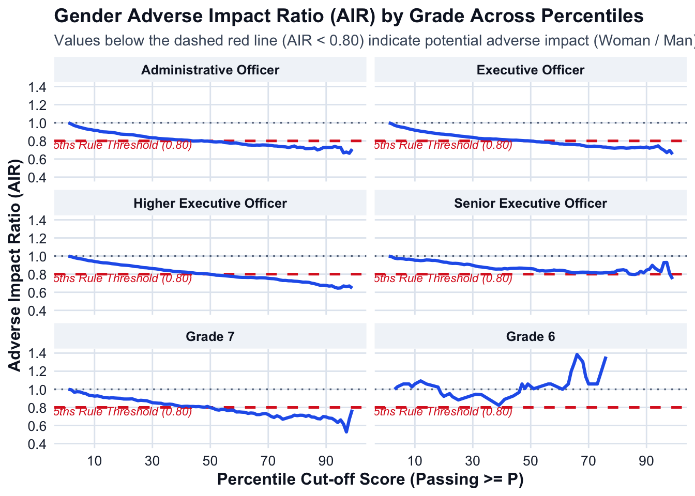
# 4. EXPORT EACH GRADE TO SEPARATE SHEETS IN ONE EXCEL WORKBOOK
# ========================================================================
wb <- createWorkbook()
# Sheet name mapping (Excel limits sheet names to 31 characters)
grade_sheet_names <- list(
"Administrative Officer" = "Admin Officer",
"Executive Officer" = "Exec Officer",
"Higher Executive Officer" = "Higher Exec Officer",
"Senior Executive Officer" = "Senior Exec Officer",
"Grade 7" = "Grade 7",
"Grade 6" = "Grade 6"
)
# Header style: light gray background with bold dark text
header_style <- createStyle(
fontColour = "#0f172a",
fgFill = "#e2e8f0",
textDecoration = "bold",
halign = "center",
border = "bottom",
borderColour = "#94a3b8"
)
# Base cell style ensuring readable dark text on white cells
body_style <- createStyle(
fontColour = "#1e293b",
fgFill = "#ffffff",
halign = "left"
)
# Soft red highlight style for rows violating the 4/5ths rule
violation_style <- createStyle(
fontColour = "#991b1b",
fgFill = "#fee2e2"
)
for (grd in target_grades) {
sheet_name <- grade_sheet_names[[grd]]
addWorksheet(wb, sheet_name)
grade_data_export <- percentile_ai_summary %>%
filter(Grade == grd) %>%
select(-Grade)
writeData(wb, sheet_name, grade_data_export, startRow = 1, startCol = 1)
# Apply base body style
addStyle(wb, sheet_name, body_style,
rows = 2:(nrow(grade_data_export) + 1),
cols = 1:ncol(grade_data_export),
gridExpand = TRUE)
# Apply header style
addStyle(wb, sheet_name, header_style,
rows = 1,
cols = 1:ncol(grade_data_export),
gridExpand = TRUE)
# Highlight rows where AIR < 0.80
violation_rows <- which(grade_data_export$Adverse_Impact_Ratio < 0.80) + 1
if (length(violation_rows) > 0) {
addStyle(wb, sheet_name, violation_style,
rows = violation_rows,
cols = 1:ncol(grade_data_export),
gridExpand = TRUE)
}
setColWidths(wb, sheet_name, cols = 1:ncol(grade_data_export), widths = "auto")
}
excel_filename <- "CSNT_Gender_Adverse_Impact_by_Grade_2025.xlsx"
saveWorkbook(wb, excel_filename, overwrite = TRUE)
cat("Excel report successfully created with separate sheets:", excel_filename, "\n\n")Excel report successfully created with separate sheets: CSNT_Gender_Adverse_Impact_by_Grade_2025.xlsx # 5. QUARTO SUMMARY: AI VIOLATION STATUS FOR EACH GRADE
# ========================================================================
cat("## Adverse Impact Summary by Grade (4/5ths Rule Evaluation)\n\n")## Adverse Impact Summary by Grade (4/5ths Rule Evaluation)for (grd in target_grades) {
cat("### Grade:", grd, "\n\n")
grade_df <- percentile_ai_summary %>% filter(Grade == grd)
# Check for percentiles where Adverse Impact Ratio is strictly below 0.80
ai_violations <- grade_df %>%
filter(Adverse_Impact_Ratio < 0.80) %>%
select(
Percentile,
Cum_Rate_Man,
Cum_Rate_Woman,
Adverse_Impact_Ratio,
Effect_Size_d
)
if (nrow(ai_violations) == 0) {
cat("> **Result:** There is **no adverse impact** for", grd, "across any percentile cutoff (1 to 99). The Adverse Impact Ratio remains $\\ge 0.80$ at all evaluated score levels.\n\n")
} else {
pct_range <- paste0(min(ai_violations$Percentile), "th to ", max(ai_violations$Percentile), "th percentile")
cat("> **Result: ADVERSE IMPACT DETECTED** for", grd, "at", nrow(ai_violations), "percentile cut-off levels (spanning ", pct_range, ").\n\n")
# Display the table of violating percentiles
print(
kable(
ai_violations %>%
mutate(
Cum_Rate_Man = paste0(round(Cum_Rate_Man * 100, 1), "%"),
Cum_Rate_Woman = paste0(round(Cum_Rate_Woman * 100, 1), "%")
),
col.names = c("Percentile Cutoff", "Male Pass Rate", "Female Pass Rate", "AIR (Woman/Man)", "Cohen's d"),
caption = paste("Percentiles with Adverse Impact Violations (AIR < 0.80) -", grd)
)
)
cat("\n\n")
}
}### Grade: Administrative Officer
> **Result: ADVERSE IMPACT DETECTED** for Administrative Officer at 54 percentile cut-off levels (spanning 44th to 99th percentile ).
Table: Percentiles with Adverse Impact Violations (AIR < 0.80) - Administrative Officer
| Percentile Cutoff|Male Pass Rate |Female Pass Rate | AIR (Woman/Man)| Cohen's d|
|-----------------:|:--------------|:----------------|---------------:|---------:|
| 44|38.5% |30.8% | 0.7988| -0.0024|
| 45|37.7% |30.1% | 0.7994| -0.1109|
| 48|35.6% |28.4% | 0.7973| 0.1313|
| 49|35.1% |28% | 0.7983| 0.0403|
| 50|34.4% |27.3% | 0.7936| -0.2770|
| 51|33.8% |26.7% | 0.7900| -0.2271|
| 52|32.6% |25.7% | 0.7884| -0.1316|
| 53|32% |25.3% | 0.7904| 0.1514|
| 54|31.2% |24.6% | 0.7898| -0.2458|
| 55|30.5% |23.8% | 0.7818| -0.0375|
| 56|29.8% |23.2% | 0.7788| 0.1259|
| 57|29.1% |22.5% | 0.7748| -0.2074|
| 58|28.4% |22.1% | 0.7768| 0.3407|
| 59|27.6% |21.5% | 0.7774| 0.1069|
| 60|27% |20.8% | 0.7693| -0.0117|
| 61|26.4% |20.2% | 0.7649| -0.0817|
| 62|26% |19.8% | 0.7612| 0.0561|
| 63|25.4% |19.2% | 0.7551| 0.1330|
| 64|24.7% |18.7% | 0.7538| 0.2536|
| 65|24.2% |18.2% | 0.7512| -0.1720|
| 66|23.6% |17.8% | 0.7541| -0.0337|
| 67|22.9% |17.3% | 0.7531| -0.0786|
| 68|22% |16.7% | 0.7554| -0.2168|
| 69|21% |15.8% | 0.7547| -0.0398|
| 70|20.2% |15.2% | 0.7526| -0.1487|
| 71|19.7% |14.7% | 0.7498| 0.0906|
| 72|18.8% |14% | 0.7444| -0.0099|
| 73|18.4% |13.6% | 0.7432| 0.2103|
| 74|17.7% |13% | 0.7371| -0.2478|
| 75|16.7% |12.3% | 0.7359| 0.0451|
| 76|16.1% |11.8% | 0.7339| 0.0501|
| 77|15.2% |11% | 0.7263| 0.4300|
| 78|14.4% |10.6% | 0.7345| 0.0198|
| 79|13.4% |10% | 0.7435| 0.0705|
| 80|12.9% |9.4% | 0.7272| -0.0184|
| 81|12.1% |8.8% | 0.7304| 0.1601|
| 82|11.5% |8.3% | 0.7263| 0.5434|
| 83|11% |7.9% | 0.7131| -0.0845|
| 84|10.2% |7.3% | 0.7148| 0.0344|
| 85|9.4% |6.7% | 0.7172| 0.1753|
| 86|8.9% |6.4% | 0.7224| 0.1081|
| 87|8% |5.6% | 0.6999| 0.2350|
| 88|7.4% |5.3% | 0.7096| 0.4171|
| 89|7% |5.1% | 0.7258| -0.0164|
| 90|6.4% |4.7% | 0.7268| -0.0664|
| 91|5.8% |4.2% | 0.7276| 0.1748|
| 92|5.1% |3.7% | 0.7284| 0.1187|
| 93|4.4% |3.3% | 0.7386| 0.3360|
| 94|3.9% |2.8% | 0.7281| 0.0646|
| 95|3.1% |2.3% | 0.7276| 0.2490|
| 96|2.4% |1.6% | 0.6681| 0.5116|
| 97|1.7% |1.2% | 0.6768| 0.0806|
| 98|1.2% |0.8% | 0.6634| -0.3171|
| 99|0.7% |0.5% | 0.7096| -0.1234|
### Grade: Executive Officer
> **Result: ADVERSE IMPACT DETECTED** for Executive Officer at 50 percentile cut-off levels (spanning 50th to 99th percentile ).
Table: Percentiles with Adverse Impact Violations (AIR < 0.80) - Executive Officer
| Percentile Cutoff|Male Pass Rate |Female Pass Rate | AIR (Woman/Man)| Cohen's d|
|-----------------:|:--------------|:----------------|---------------:|---------:|
| 50|42.6% |34% | 0.7989| 0.1005|
| 51|41.9% |33.3% | 0.7957| -0.1546|
| 52|40.7% |32.2% | 0.7907| -0.0028|
| 53|40.1% |31.7% | 0.7899| -0.0245|
| 54|39.2% |30.8% | 0.7871| -0.0957|
| 55|38.4% |30.1% | 0.7848| 0.1412|
| 56|37.6% |29.5% | 0.7849| 0.0353|
| 57|36.9% |28.7% | 0.7779| -0.1048|
| 58|36.2% |28% | 0.7741| 0.0701|
| 59|35.3% |27.2% | 0.7722| -0.0654|
| 60|34.5% |26.5% | 0.7664| 0.0781|
| 61|33.7% |25.8% | 0.7664| -0.0516|
| 62|33.2% |25.3% | 0.7621| 0.0187|
| 63|32.5% |24.8% | 0.7631| 0.0700|
| 64|31.6% |24.1% | 0.7609| -0.0090|
| 65|31.1% |23.6% | 0.7599| 0.2192|
| 66|30.4% |23% | 0.7571| -0.0654|
| 67|29.5% |22.4% | 0.7570| -0.0785|
| 68|28.9% |21.6% | 0.7487| -0.0598|
| 69|27.6% |20.5% | 0.7426| 0.1054|
| 70|26.8% |19.8% | 0.7400| -0.0076|
| 71|26.1% |19.3% | 0.7402| -0.0267|
| 72|25% |18.5% | 0.7418| -0.2308|
| 73|24.3% |18% | 0.7396| -0.1168|
| 74|23.4% |17.2% | 0.7366| 0.0898|
| 75|22.3% |16.4% | 0.7319| -0.0425|
| 76|21.5% |15.7% | 0.7316| -0.0299|
| 77|20.3% |14.7% | 0.7249| -0.0151|
| 78|19.3% |13.9% | 0.7219| 0.1137|
| 79|18.2% |13.1% | 0.7195| 0.2282|
| 80|17.3% |12.5% | 0.7223| 0.1108|
| 81|16.3% |11.8% | 0.7241| -0.0554|
| 82|15.6% |11.3% | 0.7237| -0.0070|
| 83|15% |10.8% | 0.7196| -0.0170|
| 84|14% |10.1% | 0.7213| 0.1011|
| 85|13% |9.4% | 0.7254| 0.0826|
| 86|12.2% |8.8% | 0.7239| -0.0483|
| 87|11.1% |8.1% | 0.7281| 0.1224|
| 88|10.5% |7.7% | 0.7306| -0.0893|
| 89|10% |7.3% | 0.7250| -0.0266|
| 90|9.1% |6.7% | 0.7327| -0.0620|
| 91|8.3% |6% | 0.7200| 0.0734|
| 92|7.3% |5.3% | 0.7268| 0.0318|
| 93|6.3% |4.7% | 0.7340| 0.0324|
| 94|5.5% |4.1% | 0.7453| -0.0447|
| 95|4.5% |3.2% | 0.7162| -0.2101|
| 96|3.3% |2.3% | 0.6975| -0.0441|
| 97|2.5% |1.7% | 0.6707| -0.2981|
| 98|1.8% |1.3% | 0.6946| -0.1396|
| 99|1.2% |0.8% | 0.6525| -0.0035|
### Grade: Higher Executive Officer
> **Result: ADVERSE IMPACT DETECTED** for Higher Executive Officer at 50 percentile cut-off levels (spanning 50th to 99th percentile ).
Table: Percentiles with Adverse Impact Violations (AIR < 0.80) - Higher Executive Officer
| Percentile Cutoff|Male Pass Rate |Female Pass Rate | AIR (Woman/Man)| Cohen's d|
|-----------------:|:--------------|:----------------|---------------:|---------:|
| 50|51.9% |41.5% | 0.7986| -0.0869|
| 51|51.1% |40.6% | 0.7951| 0.1259|
| 52|49.8% |39.3% | 0.7885| 0.1357|
| 53|49.1% |38.7% | 0.7875| -0.0353|
| 54|48.2% |37.8% | 0.7851| 0.0385|
| 55|47.3% |37% | 0.7823| -0.0948|
| 56|46.6% |36.3% | 0.7793| 0.0285|
| 57|45.7% |35.4% | 0.7760| 0.0944|
| 58|44.8% |34.7% | 0.7742| 0.1317|
| 59|43.8% |33.7% | 0.7691| -0.0787|
| 60|43% |32.9% | 0.7660| 0.0915|
| 61|42.2% |32.3% | 0.7642| 0.0079|
| 62|41.6% |31.8% | 0.7641| 0.0759|
| 63|40.8% |31.1% | 0.7631| -0.0956|
| 64|39.7% |30.4% | 0.7641| -0.0261|
| 65|39.2% |29.9% | 0.7624| -0.0227|
| 66|38.5% |29.2% | 0.7584| -0.1203|
| 67|37.5% |28.5% | 0.7604| 0.1138|
| 68|36.6% |27.9% | 0.7600| 0.0585|
| 69|35.2% |26.7% | 0.7588| 0.0261|
| 70|34.3% |25.8% | 0.7531| -0.0162|
| 71|33.5% |25.2% | 0.7509| -0.0369|
| 72|32.3% |24.2% | 0.7494| 0.0370|
| 73|31.6% |23.5% | 0.7442| 0.1047|
| 74|30.5% |22.5% | 0.7363| -0.1739|
| 75|29.2% |21.3% | 0.7302| 0.2298|
| 76|28.2% |20.6% | 0.7306| 0.0388|
| 77|26.7% |19.4% | 0.7269| 0.0320|
| 78|25.5% |18.5% | 0.7263| -0.1111|
| 79|24.4% |17.6% | 0.7221| -0.0743|
| 80|23.3% |16.8% | 0.7203| 0.1368|
| 81|22.2% |15.9% | 0.7165| 0.0588|
| 82|21.3% |15.1% | 0.7118| -0.1025|
| 83|20.4% |14.6% | 0.7121| 0.1509|
| 84|19.1% |13.6% | 0.7096| -0.0297|
| 85|17.9% |12.5% | 0.7004| 0.0588|
| 86|17% |11.8% | 0.6947| 0.0088|
| 87|15.5% |10.6% | 0.6855| -0.1121|
| 88|14.9% |10.1% | 0.6767| -0.2189|
| 89|14.3% |9.7% | 0.6776| 0.0476|
| 90|13.1% |8.8% | 0.6751| 0.0852|
| 91|12% |8% | 0.6682| -0.0105|
| 92|10.6% |7.1% | 0.6711| -0.1336|
| 93|9.4% |6.1% | 0.6543| 0.0072|
| 94|8.3% |5.4% | 0.6451| 0.0904|
| 95|6.9% |4.4% | 0.6478| -0.0390|
| 96|5% |3.3% | 0.6697| -0.0095|
| 97|3.7% |2.4% | 0.6627| 0.1853|
| 98|2.8% |1.9% | 0.6694| 0.0847|
| 99|1.8% |1.2% | 0.6454| -0.0184|
### Grade: Senior Executive Officer
> **Result: ADVERSE IMPACT DETECTED** for Senior Executive Officer at 3 percentile cut-off levels (spanning 85th to 99th percentile ).
Table: Percentiles with Adverse Impact Violations (AIR < 0.80) - Senior Executive Officer
| Percentile Cutoff|Male Pass Rate |Female Pass Rate | AIR (Woman/Man)| Cohen's d|
|-----------------:|:--------------|:----------------|---------------:|---------:|
| 85|16.6% |13.3% | 0.7978| -0.1052|
| 86|15.7% |12.5% | 0.7964| 0.0704|
| 99|1.5% |1.1% | 0.7461| -0.0848|
### Grade: Grade 7
> **Result: ADVERSE IMPACT DETECTED** for Grade 7 at 50 percentile cut-off levels (spanning 50th to 99th percentile ).
Table: Percentiles with Adverse Impact Violations (AIR < 0.80) - Grade 7
| Percentile Cutoff|Male Pass Rate |Female Pass Rate | AIR (Woman/Man)| Cohen's d|
|-----------------:|:--------------|:----------------|---------------:|---------:|
| 50|47.4% |37.8% | 0.7975| -0.2201|
| 51|46.6% |36.9% | 0.7906| 0.2877|
| 52|45.6% |35.4% | 0.7749| -0.6528|
| 53|45.1% |34.7% | 0.7701| -0.4062|
| 54|43.8% |34.2% | 0.7793| -0.1619|
| 55|42.9% |33.2% | 0.7753| -0.3611|
| 56|42% |32.1% | 0.7654| 0.6558|
| 57|40.7% |31.4% | 0.7706| 0.2835|
| 58|39.8% |30.6% | 0.7694| 0.1657|
| 59|39.4% |29.5% | 0.7493| 0.1243|
| 60|38.4% |28.8% | 0.7503| 0.3406|
| 61|37.4% |28% | 0.7474| -1.2493|
| 62|37% |27.6% | 0.7458| -0.0655|
| 63|36.6% |26.9% | 0.7340| -0.0878|
| 64|35.5% |26.2% | 0.7386| -0.2947|
| 65|34.9% |25.6% | 0.7359| -0.1668|
| 66|34.3% |24.7% | 0.7207| 0.2029|
| 67|33.4% |24.1% | 0.7207| -0.3695|
| 68|32.6% |23.8% | 0.7290| 0.0472|
| 69|31.2% |22.9% | 0.7333| -0.0214|
| 70|30.3% |21.9% | 0.7214| -0.1148|
| 71|29.9% |20.9% | 0.7004| -0.1721|
| 72|28.8% |19.8% | 0.6888| -1.8766|
| 73|27.9% |19.7% | 0.7077| -0.0452|
| 74|27% |18.8% | 0.6951| -0.8321|
| 75|25.7% |17.2% | 0.6694| -0.1217|
| 76|24.6% |16.7% | 0.6789| -0.0680|
| 77|23.2% |16% | 0.6894| 0.0189|
| 78|21.8% |15.2% | 0.6971| -0.6286|
| 79|20.6% |14.7% | 0.7144| 0.6705|
| 80|19.8% |14.1% | 0.7091| 0.7084|
| 81|18.8% |13.4% | 0.7137| -0.2978|
| 82|18.2% |13% | 0.7127| -0.5069|
| 83|17.6% |12.3% | 0.7011| 0.3611|
| 84|16.3% |11.6% | 0.7122| -0.3104|
| 85|15.2% |10.6% | 0.6938| 0.6208|
| 86|14.5% |10% | 0.6919| 0.0615|
| 87|13.4% |9.1% | 0.6763| -0.7473|
| 88|12.9% |8.7% | 0.6730| 0.5263|
| 89|12.3% |8.6% | 0.6995| -0.0590|
| 90|11.1% |7.7% | 0.6945| -0.0696|
| 91|10.6% |7.2% | 0.6826| 0.4598|
| 92|9.4% |6.4% | 0.6793| -0.4296|
| 93|8.6% |5.6% | 0.6586| -0.5444|
| 94|7.6% |4.8% | 0.6329| 0.0095|
| 95|6.2% |4.1% | 0.6619| 0.3365|
| 96|4.4% |2.7% | 0.6163| -0.0208|
| 97|3% |1.6% | 0.5293| 2.4661|
| 98|2.2% |1.5% | 0.6694| 0.0275|
| 99|1.3% |1% | 0.7751| -0.0872|
### Grade: Grade 6
> **Result:** There is **no adverse impact** for Grade 6 across any percentile cutoff (1 to 99). The Adverse Impact Ratio remains $\ge 0.80$ at all evaluated score levels.### D.2 Disability
# 1. VERIFY DATA & PREPARE DATASET (DISABILITY: 'No' vs 'Yes')
# ========================================================================
if (!exists("CSNT_Final_With_Scores")) {
stop("CSNT_Final_With_Scores is not present in the environment.")
}
target_grades <- c(
"Administrative Officer",
"Executive Officer",
"Higher Executive Officer",
"Senior Executive Officer",
"Grade 7",
"Grade 6"
)
# Identify grade column safely
col_grade <- intersect(
c("job_grade", "job_grade.x", "Job_Grade", "Grade"),
colnames(CSNT_Final_With_Scores)
)[1]
# Support both percentile_1PL and percentile_1PL_new column names
col_pct <- intersect(
c("percentile_1PL_new", "percentile_1PL", "Percentile"),
colnames(CSNT_Final_With_Scores)
)[1]
if (is.na(col_pct)) {
stop("Percentile column not found. Run percent_rank() step first.")
}
# Filter for target grades, Disability ('No' vs 'Yes'), and valid scores
df_ai_prep_disability <- CSNT_Final_With_Scores %>%
filter(.data[[col_grade]] %in% target_grades) %>%
filter(disability %in% c("No", "Yes")) %>%
filter(!is.na(.data[[col_pct]]), !is.na(theta_1PL_new)) %>%
mutate(
Grade = factor(.data[[col_grade]], levels = target_grades),
Disability = factor(disability, levels = c("No", "Yes")),
Percentile = round(as.numeric(.data[[col_pct]]))
) %>%
filter(Percentile >= 1, Percentile <= 99)
# ==============================================================================
# 2. CALCULATE ADVERSE IMPACT RATIO FOR EACH PERCENTILE (1 TO 99) BY GRADE
# Reference Group = No Disability ('No') | Focal Group = Disability ('Yes')
# ==============================================================================
# Step A: Grand totals per grade and disability status (denominators)
total_counts_per_grade <- df_ai_prep_disability %>%
group_by(Grade) %>%
summarise(
Grand_Total_No = sum(Disability == "No"),
Grand_Total_Yes = sum(Disability == "Yes"),
.groups = "drop"
)
# Step B: Counts and theta distribution per percentile
pct_counts <- df_ai_prep_disability %>%
group_by(Grade, Percentile) %>%
summarise(
Count_No = sum(Disability == "No"),
Count_Yes = sum(Disability == "Yes"),
Mean_Theta_No = mean(theta_1PL_new[Disability == "No"], na.rm = TRUE),
Mean_Theta_Yes = mean(theta_1PL_new[Disability == "Yes"], na.rm = TRUE),
SD_Theta_No = sd(theta_1PL_new[Disability == "No"], na.rm = TRUE),
SD_Theta_Yes = sd(theta_1PL_new[Disability == "Yes"], na.rm = TRUE),
.groups = "drop"
)
# Step C: Cumulative selection rates and Adverse Impact Ratios (Yes / No)
percentile_ai_disability_summary <- pct_counts %>%
left_join(total_counts_per_grade, by = "Grade") %>%
arrange(Grade, desc(Percentile)) %>% # Descending for reverse cumulative sums
group_by(Grade) %>%
mutate(
# Cumulative candidates meeting or exceeding cut-off
Cum_Passed_No = cumsum(Count_No),
Cum_Passed_Yes = cumsum(Count_Yes),
# Cumulative Selection Rates
Cum_Rate_No = Cum_Passed_No / Grand_Total_No,
Cum_Rate_Yes = Cum_Passed_Yes / Grand_Total_Yes,
# AIR: Focal Group ('Yes') / Reference Group ('No')
Adverse_Impact_Ratio = round(Cum_Rate_Yes / ifelse(Cum_Rate_No == 0, NA, Cum_Rate_No), 4),
# 4/5ths Rule flag (< 0.80)
Status_4_5ths = ifelse(Adverse_Impact_Ratio < 0.80, "ADVERSE IMPACT (< 0.80)", "PASS (>= 0.80)"),
# Effect Size (Cohen's d: Yes - No)
Pooled_SD_Pct = sqrt((replace_na(SD_Theta_No, 0)^2 + replace_na(SD_Theta_Yes, 0)^2) / 2),
Effect_Size_d = ifelse(Pooled_SD_Pct > 0, round((Mean_Theta_Yes - Mean_Theta_No) / Pooled_SD_Pct, 4), 0)
) %>%
arrange(Grade, Percentile) %>%
select(
Grade, Percentile,
Count_No, Count_Yes,
Cum_Passed_No, Cum_Passed_Yes,
Cum_Rate_No, Cum_Rate_Yes,
Adverse_Impact_Ratio, Status_4_5ths,
Mean_Theta_No, Mean_Theta_Yes, Effect_Size_d
) %>%
ungroup()
# ==============================================================================
# 3. VISUALIZATION: MULTI-PANEL ADVERSE IMPACT RATIO CHART BY GRADE
# ==============================================================================
theme_clean_report <- theme_minimal(base_size = 12) +
theme(
plot.background = element_rect(fill = "white", color = NA),
panel.background = element_rect(fill = "white", color = NA),
panel.grid.major = element_line(color = "#e2e8f0", linewidth = 0.5),
panel.grid.minor = element_blank(),
axis.text = element_text(color = "#1e293b", size = 10),
axis.title = element_text(color = "#0f172a", face = "bold"),
plot.title = element_text(color = "#0f172a", face = "bold", size = 14),
plot.subtitle = element_text(color = "#475569", size = 11),
strip.background = element_rect(fill = "#f1f5f9", color = NA),
strip.text = element_text(color = "#0f172a", face = "bold")
)
p_disability_ai <- ggplot(percentile_ai_disability_summary, aes(x = Percentile, y = Adverse_Impact_Ratio)) +
annotate("rect", xmin = -Inf, xmax = Inf, ymin = 0, ymax = 0.80,
fill = "#fee2e2", alpha = 0.6) +
geom_hline(yintercept = 0.80, linetype = "dashed", color = "#dc2626", linewidth = 0.9) +
geom_hline(yintercept = 1.00, linetype = "dotted", color = "#64748b", linewidth = 0.6) +
geom_line(color = "#0284c7", linewidth = 1.1) +
annotate("text", x = 18, y = 0.76, label = "4/5ths Rule (0.80)",
color = "#dc2626", size = 3, fontface = "italic") +
facet_wrap(~ Grade, ncol = 2) +
scale_y_continuous(
limits = c(0.4, 1.4),
breaks = seq(0.4, 1.4, by = 0.2),
labels = scales::number_format(accuracy = 0.1)
) +
scale_x_continuous(breaks = seq(10, 90, by = 20)) +
labs(
title = "Disability Adverse Impact Ratio (AIR) by Grade Across Percentiles",
subtitle = "Values below the dashed red line (AIR < 0.80) indicate potential adverse impact (Disability: Yes / No)",
x = "Percentile Cut-off Score (Passing >= P)",
y = "Adverse Impact Ratio (AIR)"
) +
theme_clean_report
print(p_disability_ai)Warning: Removed 3 rows containing missing values or values outside the scale range
(`geom_line()`).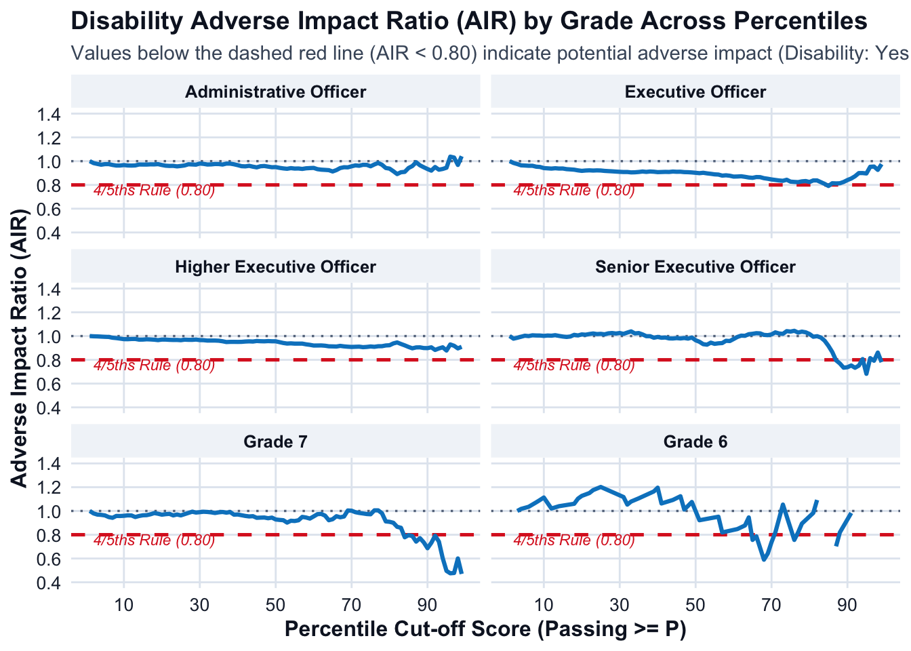
# ==============================================================================
# 4. EXPORT TO WORKBOOK WITH SEPARATE SHEETS PER GRADE
# ==============================================================================
wb_disability <- createWorkbook()
grade_sheet_names <- list(
"Administrative Officer" = "Admin Officer",
"Executive Officer" = "Exec Officer",
"Higher Executive Officer" = "Higher Exec Officer",
"Senior Executive Officer" = "Senior Exec Officer",
"Grade 7" = "Grade 7",
"Grade 6" = "Grade 6"
)
header_style <- createStyle(
fontColour = "#0f172a",
fgFill = "#e2e8f0",
textDecoration = "bold",
halign = "center",
border = "bottom",
borderColour = "#94a3b8"
)
body_style <- createStyle(
fontColour = "#1e293b",
fgFill = "#ffffff",
halign = "left"
)
violation_style <- createStyle(
fontColour = "#991b1b",
fgFill = "#fee2e2"
)
for (grd in target_grades) {
sheet_name <- grade_sheet_names[[grd]]
addWorksheet(wb_disability, sheet_name)
grade_data_export <- percentile_ai_disability_summary %>%
filter(Grade == grd) %>%
select(-Grade)
writeData(wb_disability, sheet_name, grade_data_export, startRow = 1, startCol = 1)
# Format body rows
addStyle(wb_disability, sheet_name, body_style,
rows = 2:(nrow(grade_data_export) + 1),
cols = 1:ncol(grade_data_export),
gridExpand = TRUE)
# Format header
addStyle(wb_disability, sheet_name, header_style,
rows = 1,
cols = 1:ncol(grade_data_export),
gridExpand = TRUE)
# Highlight rows with AIR < 0.80
violation_rows <- which(grade_data_export$Adverse_Impact_Ratio < 0.80) + 1
if (length(violation_rows) > 0) {
addStyle(wb_disability, sheet_name, violation_style,
rows = violation_rows,
cols = 1:ncol(grade_data_export),
gridExpand = TRUE)
}
setColWidths(wb_disability, sheet_name, cols = 1:ncol(grade_data_export), widths = "auto")
}
excel_disability_filename <- "CSNT_Disability_Adverse_Impact_by_Grade_2025.xlsx"
saveWorkbook(wb_disability, excel_disability_filename, overwrite = TRUE)
cat("\nExcel report successfully created with separate sheets:", excel_disability_filename, "\n\n")
Excel report successfully created with separate sheets: CSNT_Disability_Adverse_Impact_by_Grade_2025.xlsx # ==============================================================================
# 5. QUARTO SUMMARY: AI VIOLATION REPORT BY GRADE
# ==============================================================================
cat("## Disability Adverse Impact Summary by Grade (4/5ths Rule Evaluation)\n\n")## Disability Adverse Impact Summary by Grade (4/5ths Rule Evaluation)for (grd in target_grades) {
cat("### Grade:", grd, "\n\n")
grade_df <- percentile_ai_disability_summary %>% filter(Grade == grd)
# Check for percentiles where Adverse Impact Ratio is strictly below 0.80
ai_violations <- grade_df %>%
filter(Adverse_Impact_Ratio < 0.80) %>%
select(
Percentile,
Cum_Rate_No,
Cum_Rate_Yes,
Adverse_Impact_Ratio,
Effect_Size_d
)
if (nrow(ai_violations) == 0) {
cat("> **Result:** There is **no adverse impact** for", grd, "across any percentile cutoff (1 to 99). The Adverse Impact Ratio remains $\\ge 0.80$ at all evaluated score levels.\n\n")
} else {
pct_range <- paste0(min(ai_violations$Percentile), "th to ", max(ai_violations$Percentile), "th percentile")
cat("> **Result: ADVERSE IMPACT DETECTED** for", grd, "at", nrow(ai_violations), "percentile cut-off levels (spanning ", pct_range, ").\n\n")
print(
kable(
ai_violations %>%
mutate(
Cum_Rate_No = paste0(round(Cum_Rate_No * 100, 1), "%"),
Cum_Rate_Yes = paste0(round(Cum_Rate_Yes * 100, 1), "%")
),
col.names = c("Percentile Cutoff", "No Disability Pass Rate", "Disability (Yes) Pass Rate", "AIR (Yes/No)", "Cohen's d"),
caption = paste("Percentiles with Adverse Impact Violations (AIR < 0.80) -", grd)
)
)
cat("\n\n")
}
}### Grade: Administrative Officer
> **Result:** There is **no adverse impact** for Administrative Officer across any percentile cutoff (1 to 99). The Adverse Impact Ratio remains $\ge 0.80$ at all evaluated score levels.
### Grade: Executive Officer
> **Result: ADVERSE IMPACT DETECTED** for Executive Officer at 1 percentile cut-off levels (spanning 85th to 85th percentile ).
Table: Percentiles with Adverse Impact Violations (AIR < 0.80) - Executive Officer
| Percentile Cutoff|No Disability Pass Rate |Disability (Yes) Pass Rate | AIR (Yes/No)| Cohen's d|
|-----------------:|:-----------------------|:--------------------------|------------:|---------:|
| 85|11.6% |9.2% | 0.7912| -0.3275|
### Grade: Higher Executive Officer
> **Result:** There is **no adverse impact** for Higher Executive Officer across any percentile cutoff (1 to 99). The Adverse Impact Ratio remains $\ge 0.80$ at all evaluated score levels.
### Grade: Senior Executive Officer
> **Result: ADVERSE IMPACT DETECTED** for Senior Executive Officer at 10 percentile cut-off levels (spanning 87th to 99th percentile ).
Table: Percentiles with Adverse Impact Violations (AIR < 0.80) - Senior Executive Officer
| Percentile Cutoff|No Disability Pass Rate |Disability (Yes) Pass Rate | AIR (Yes/No)| Cohen's d|
|-----------------:|:-----------------------|:--------------------------|------------:|---------:|
| 87|13.6% |10.8% | 0.7960| -0.1555|
| 88|12.9% |10% | 0.7695| 0.5409|
| 89|12.1% |8.9% | 0.7338| -0.9959|
| 90|11.2% |8.3% | 0.7378| -1.0070|
| 91|10.1% |7.6% | 0.7525| 0.0212|
| 92|9% |6.6% | 0.7331| 0.6034|
| 93|7.9% |5.9% | 0.7513| -1.8110|
| 95|5.6% |3.8% | 0.6824| -1.0246|
| 97|2.9% |2.3% | 0.7924| -0.6699|
| 99|1.4% |1.1% | 0.7804| 1.7421|
### Grade: Grade 7
> **Result: ADVERSE IMPACT DETECTED** for Grade 7 at 16 percentile cut-off levels (spanning 84th to 99th percentile ).
Table: Percentiles with Adverse Impact Violations (AIR < 0.80) - Grade 7
| Percentile Cutoff|No Disability Pass Rate |Disability (Yes) Pass Rate | AIR (Yes/No)| Cohen's d|
|-----------------:|:-----------------------|:--------------------------|------------:|---------:|
| 84|15% |11.7% | 0.7787| 0.0087|
| 85|13.8% |11% | 0.7965| -1.1139|
| 86|13.1% |10.4% | 0.7890| 0.2529|
| 87|12.2% |9.1% | 0.7423| NaN|
| 88|11.7% |9.1% | 0.7713| -0.4457|
| 89|11.4% |8.4% | 0.7363| -0.0929|
| 90|10.4% |7.1% | 0.6865| NaN|
| 91|9.7% |7.1% | 0.7318| 1.7788|
| 92|8.6% |6.8% | 0.7919| -0.5389|
| 93|7.8% |5.8% | 0.7423| 0.4785|
| 94|7% |4.2% | 0.6031| -0.2471|
| 95|5.9% |2.9% | 0.4958| -0.2544|
| 96|4.1% |1.9% | 0.4754| 1.0231|
| 97|2.7% |1.3% | 0.4781| NaN|
| 98|2.2% |1.3% | 0.6002| 1.0147|
| 99|1.4% |0.6% | 0.4701| 0.1279|
### Grade: Grade 6
> **Result: ADVERSE IMPACT DETECTED** for Grade 6 at 10 percentile cut-off levels (spanning 65th to 99th percentile ).
Table: Percentiles with Adverse Impact Violations (AIR < 0.80) - Grade 6
| Percentile Cutoff|No Disability Pass Rate |Disability (Yes) Pass Rate | AIR (Yes/No)| Cohen's d|
|-----------------:|:-----------------------|:--------------------------|------------:|---------:|
| 65|44.1% |33.3% | 0.7564| 0|
| 66|42.4% |33.3% | 0.7867| 0|
| 68|42.4% |25% | 0.5900| NaN|
| 69|39% |25% | 0.6413| NaN|
| 70|33.9% |25% | 0.7375| NaN|
| 76|22% |16.7% | 0.7564| 0|
| 87|11.9% |8.3% | 0.7024| 0|
| 94|6.8% |0% | 0.0000| 0|
| 96|5.1% |0% | 0.0000| NaN|
| 99|1.7% |0% | 0.0000| 0|D.3 Applicant Type
# 1. VERIFY DATA & PREPARE DATASET (APPLICANT TYPE)
# Reference: Internal / OGD | Focal: External | Other: Ignored
# ==============================================================================
if (!exists("CSNT_Final_With_Scores")) {
stop("CSNT_Final_With_Scores is not present in the environment.")
}
target_grades <- c(
"Administrative Officer",
"Executive Officer",
"Higher Executive Officer",
"Senior Executive Officer",
"Grade 7",
"Grade 6"
)
# Identify grade column safely
col_grade <- intersect(
c("job_grade", "job_grade.x", "Job_Grade", "Grade"),
colnames(CSNT_Final_With_Scores)
)[1]
# Support both percentile_1PL and percentile_1PL_new column names
col_pct <- intersect(
c("percentile_1PL_new", "percentile_1PL", "Percentile"),
colnames(CSNT_Final_With_Scores)
)[1]
if (is.na(col_pct)) {
stop("Percentile column not found. Run percent_rank() step first.")
}
# Classify applicant type: Internal/OGD vs External
df_ai_prep_app_type <- CSNT_Final_With_Scores %>%
filter(.data[[col_grade]] %in% target_grades) %>%
mutate(
raw_app_type = as.character(application_form_applicant_type),
Applicant_Group = case_when(
grepl("^(Internal|OGD)", raw_app_type, ignore.case = TRUE) ~ "Internal / OGD",
grepl("^External", raw_app_type, ignore.case = TRUE) ~ "External",
TRUE ~ NA_character_
)
) %>%
filter(!is.na(Applicant_Group)) %>%
filter(!is.na(.data[[col_pct]]), !is.na(theta_1PL_new)) %>%
mutate(
Grade = factor(.data[[col_grade]], levels = target_grades),
Applicant_Group = factor(Applicant_Group, levels = c("Internal / OGD", "External")),
Percentile = round(as.numeric(.data[[col_pct]]))
) %>%
filter(Percentile >= 1, Percentile <= 99)
# 2. CALCULATE ADVERSE IMPACT RATIO FOR EACH PERCENTILE (1 TO 99) BY GRADE
# Reference Group = 'Internal / OGD' | Focal Group = 'External'
# ==============================================================================
# Step A: Grand totals per grade and applicant group (denominators)
total_counts_per_grade <- df_ai_prep_app_type %>%
group_by(Grade) %>%
summarise(
Grand_Total_Internal_OGD = sum(Applicant_Group == "Internal / OGD"),
Grand_Total_External = sum(Applicant_Group == "External"),
.groups = "drop"
)
# Step B: Counts and theta distribution per percentile
pct_counts <- df_ai_prep_app_type %>%
group_by(Grade, Percentile) %>%
summarise(
Count_Internal_OGD = sum(Applicant_Group == "Internal / OGD"),
Count_External = sum(Applicant_Group == "External"),
Mean_Theta_Internal_OGD = mean(theta_1PL_new[Applicant_Group == "Internal / OGD"], na.rm = TRUE),
Mean_Theta_External = mean(theta_1PL_new[Applicant_Group == "External"], na.rm = TRUE),
SD_Theta_Internal_OGD = sd(theta_1PL_new[Applicant_Group == "Internal / OGD"], na.rm = TRUE),
SD_Theta_External = sd(theta_1PL_new[Applicant_Group == "External"], na.rm = TRUE),
.groups = "drop"
)
# Step C: Cumulative selection rates and Adverse Impact Ratios (External / Internal_OGD)
percentile_ai_app_type_summary <- pct_counts %>%
left_join(total_counts_per_grade, by = "Grade") %>%
arrange(Grade, desc(Percentile)) %>% # Descending for reverse cumulative sums
group_by(Grade) %>%
mutate(
# Cumulative candidates meeting or exceeding cut-off
Cum_Passed_Internal_OGD = cumsum(Count_Internal_OGD),
Cum_Passed_External = cumsum(Count_External),
# Cumulative Selection Rates
Cum_Rate_Internal_OGD = Cum_Passed_Internal_OGD / Grand_Total_Internal_OGD,
Cum_Rate_External = Cum_Passed_External / Grand_Total_External,
# AIR: Focal Group ('External') / Reference Group ('Internal / OGD')
Adverse_Impact_Ratio = round(Cum_Rate_External / ifelse(Cum_Rate_Internal_OGD == 0, NA, Cum_Rate_Internal_OGD), 4),
# 4/5ths Rule flag (< 0.80)
Status_4_5ths = ifelse(Adverse_Impact_Ratio < 0.80, "ADVERSE IMPACT (< 0.80)", "PASS (>= 0.80)"),
# Effect Size (Cohen's d: External - Internal_OGD)
Pooled_SD_Pct = sqrt((replace_na(SD_Theta_Internal_OGD, 0)^2 + replace_na(SD_Theta_External, 0)^2) / 2),
Effect_Size_d = ifelse(Pooled_SD_Pct > 0, round((Mean_Theta_External - Mean_Theta_Internal_OGD) / Pooled_SD_Pct, 4), 0)
) %>%
arrange(Grade, Percentile) %>%
select(
Grade, Percentile,
Count_Internal_OGD, Count_External,
Cum_Passed_Internal_OGD, Cum_Passed_External,
Cum_Rate_Internal_OGD, Cum_Rate_External,
Adverse_Impact_Ratio, Status_4_5ths,
Mean_Theta_Internal_OGD, Mean_Theta_External, Effect_Size_d
) %>%
ungroup()
# 3. VISUALIZATION: MULTI-PANEL ADVERSE IMPACT RATIO CHART BY GRADE
# ==============================================================================
theme_clean_report <- theme_minimal(base_size = 12) +
theme(
plot.background = element_rect(fill = "white", color = NA),
panel.background = element_rect(fill = "white", color = NA),
panel.grid.major = element_line(color = "#e2e8f0", linewidth = 0.5),
panel.grid.minor = element_blank(),
axis.text = element_text(color = "#1e293b", size = 10),
axis.title = element_text(color = "#0f172a", face = "bold"),
plot.title = element_text(color = "#0f172a", face = "bold", size = 14),
plot.subtitle = element_text(color = "#475569", size = 11),
strip.background = element_rect(fill = "#f1f5f9", color = NA),
strip.text = element_text(color = "#0f172a", face = "bold")
)
p_app_type_ai <- ggplot(percentile_ai_app_type_summary, aes(x = Percentile, y = Adverse_Impact_Ratio)) +
annotate("rect", xmin = -Inf, xmax = Inf, ymin = 0, ymax = 0.80,
fill = "#fee2e2", alpha = 0.6) +
geom_hline(yintercept = 0.80, linetype = "dashed", color = "#dc2626", linewidth = 0.9) +
geom_hline(yintercept = 1.00, linetype = "dotted", color = "#64748b", linewidth = 0.6) +
geom_line(color = "#0d9488", linewidth = 1.1) +
annotate("text", x = 18, y = 0.76, label = "4/5ths Rule (0.80)",
color = "#dc2626", size = 3, fontface = "italic") +
facet_wrap(~ Grade, ncol = 2) +
scale_y_continuous(
limits = c(0.4, 1.4),
breaks = seq(0.4, 1.4, by = 0.2),
labels = scales::number_format(accuracy = 0.1)
) +
scale_x_continuous(breaks = seq(10, 90, by = 20)) +
labs(
title = "Applicant Type Adverse Impact Ratio (AIR) by Grade Across Percentiles",
subtitle = "Values below dashed red line (AIR < 0.80) indicate potential adverse impact (External / Internal & OGD)",
x = "Percentile Cut-off Score (Passing >= P)",
y = "Adverse Impact Ratio (AIR)"
) +
theme_clean_report
print(p_app_type_ai)Warning: Removed 2 rows containing missing values or values outside the scale range
(`geom_line()`).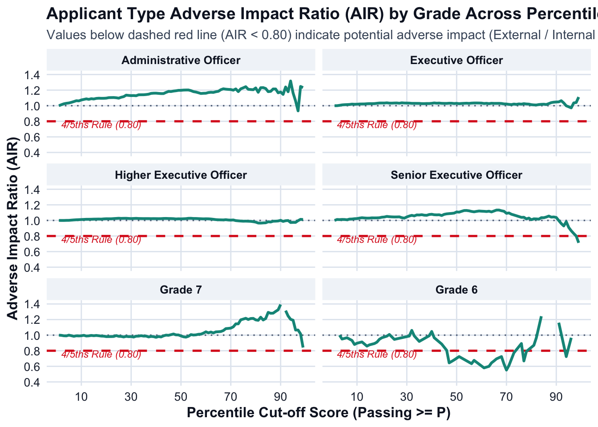
# 4. EXPORT TO WORKBOOK WITH SEPARATE SHEETS PER GRADE
# ==============================================================================
wb_app_type <- createWorkbook()
grade_sheet_names <- list(
"Administrative Officer" = "Admin Officer",
"Executive Officer" = "Exec Officer",
"Higher Executive Officer" = "Higher Exec Officer",
"Senior Executive Officer" = "Senior Exec Officer",
"Grade 7" = "Grade 7",
"Grade 6" = "Grade 6"
)
header_style <- createStyle(
fontColour = "#0f172a",
fgFill = "#e2e8f0",
textDecoration = "bold",
halign = "center",
border = "bottom",
borderColour = "#94a3b8"
)
body_style <- createStyle(
fontColour = "#1e293b",
fgFill = "#ffffff",
halign = "left"
)
violation_style <- createStyle(
fontColour = "#991b1b",
fgFill = "#fee2e2"
)
for (grd in target_grades) {
sheet_name <- grade_sheet_names[[grd]]
addWorksheet(wb_app_type, sheet_name)
grade_data_export <- percentile_ai_app_type_summary %>%
filter(Grade == grd) %>%
select(-Grade)
writeData(wb_app_type, sheet_name, grade_data_export, startRow = 1, startCol = 1)
# Format body rows
addStyle(wb_app_type, sheet_name, body_style,
rows = 2:(nrow(grade_data_export) + 1),
cols = 1:ncol(grade_data_export),
gridExpand = TRUE)
# Format header
addStyle(wb_app_type, sheet_name, header_style,
rows = 1,
cols = 1:ncol(grade_data_export),
gridExpand = TRUE)
# Highlight rows with AIR < 0.80
violation_rows <- which(grade_data_export$Adverse_Impact_Ratio < 0.80) + 1
if (length(violation_rows) > 0) {
addStyle(wb_app_type, sheet_name, violation_style,
rows = violation_rows,
cols = 1:ncol(grade_data_export),
gridExpand = TRUE)
}
setColWidths(wb_app_type, sheet_name, cols = 1:ncol(grade_data_export), widths = "auto")
}
excel_app_type_filename <- "CSNT_ApplicantType_Adverse_Impact_by_Grade_2025.xlsx"
saveWorkbook(wb_app_type, excel_app_type_filename, overwrite = TRUE)
cat("\nExcel report successfully created with separate sheets:", excel_app_type_filename, "\n\n")
Excel report successfully created with separate sheets: CSNT_ApplicantType_Adverse_Impact_by_Grade_2025.xlsx # 5. QUARTO SUMMARY: AI VIOLATION REPORT BY GRADE
# ==============================================================================
cat("## Applicant Type Adverse Impact Summary by Grade (4/5ths Rule Evaluation)\n\n")## Applicant Type Adverse Impact Summary by Grade (4/5ths Rule Evaluation)for (grd in target_grades) {
cat("### Grade:", grd, "\n\n")
grade_df <- percentile_ai_app_type_summary %>% filter(Grade == grd)
# Check for percentiles where Adverse Impact Ratio is strictly below 0.80
ai_violations <- grade_df %>%
filter(Adverse_Impact_Ratio < 0.80) %>%
select(
Percentile,
Cum_Rate_Internal_OGD,
Cum_Rate_External,
Adverse_Impact_Ratio,
Effect_Size_d
)
if (nrow(ai_violations) == 0) {
cat("> **Result:** There is **no adverse impact** for", grd, "across any percentile cutoff (1 to 99). The Adverse Impact Ratio remains $\\ge 0.80$ at all evaluated score levels.\n\n")
} else {
pct_range <- paste0(min(ai_violations$Percentile), "th to ", max(ai_violations$Percentile), "th percentile")
cat("> **Result: ADVERSE IMPACT DETECTED** for", grd, "at", nrow(ai_violations), "percentile cut-off levels (spanning ", pct_range, ").\n\n")
print(
kable(
ai_violations %>%
mutate(
Cum_Rate_Internal_OGD = paste0(round(Cum_Rate_Internal_OGD * 100, 1), "%"),
Cum_Rate_External = paste0(round(Cum_Rate_External * 100, 1), "%")
),
col.names = c("Percentile Cutoff", "Internal / OGD Pass Rate", "External Pass Rate", "AIR (External / Internal)", "Cohen's d"),
caption = paste("Percentiles with Adverse Impact Violations (AIR < 0.80) -", grd)
)
)
cat("\n\n")
}
}### Grade: Administrative Officer
> **Result:** There is **no adverse impact** for Administrative Officer across any percentile cutoff (1 to 99). The Adverse Impact Ratio remains $\ge 0.80$ at all evaluated score levels.
### Grade: Executive Officer
> **Result:** There is **no adverse impact** for Executive Officer across any percentile cutoff (1 to 99). The Adverse Impact Ratio remains $\ge 0.80$ at all evaluated score levels.
### Grade: Higher Executive Officer
> **Result:** There is **no adverse impact** for Higher Executive Officer across any percentile cutoff (1 to 99). The Adverse Impact Ratio remains $\ge 0.80$ at all evaluated score levels.
### Grade: Senior Executive Officer
> **Result: ADVERSE IMPACT DETECTED** for Senior Executive Officer at 2 percentile cut-off levels (spanning 98th to 99th percentile ).
Table: Percentiles with Adverse Impact Violations (AIR < 0.80) - Senior Executive Officer
| Percentile Cutoff|Internal / OGD Pass Rate |External Pass Rate | AIR (External / Internal)| Cohen's d|
|-----------------:|:------------------------|:------------------|-------------------------:|---------:|
| 98|2.3% |1.8% | 0.7998| -0.0292|
| 99|1.7% |1.2% | 0.7128| -0.0477|
### Grade: Grade 7
> **Result:** There is **no adverse impact** for Grade 7 across any percentile cutoff (1 to 99). The Adverse Impact Ratio remains $\ge 0.80$ at all evaluated score levels.
### Grade: Grade 6
> **Result: ADVERSE IMPACT DETECTED** for Grade 6 at 20 percentile cut-off levels (spanning 47th to 99th percentile ).
Table: Percentiles with Adverse Impact Violations (AIR < 0.80) - Grade 6
| Percentile Cutoff|Internal / OGD Pass Rate |External Pass Rate | AIR (External / Internal)| Cohen's d|
|-----------------:|:------------------------|:------------------|-------------------------:|---------:|
| 47|62.1% |40% | 0.6444| 0.0000|
| 48|60.3% |40% | 0.6629| 0.0000|
| 49|58.6% |40% | 0.6824| NaN|
| 51|55.2% |40% | 0.7250| 0.0000|
| 56|55.2% |35% | 0.6344| NaN|
| 57|51.7% |35% | 0.6767| 0.0000|
| 61|51.7% |30% | 0.5800| 0.0000|
| 63|50% |30% | 0.6000| NaN|
| 64|46.6% |30% | 0.6444| 0.0000|
| 65|44.8% |30% | 0.6692| 0.0000|
| 66|43.1% |30% | 0.6960| 0.0000|
| 68|41.4% |30% | 0.7250| 0.0000|
| 69|39.7% |25% | 0.6304| -7.3689|
| 70|36.2% |20% | 0.5524| NaN|
| 71|32.8% |20% | 0.6105| NaN|
| 73|25.9% |20% | 0.7733| NaN|
| 77|22.4% |15% | 0.6692| NaN|
| 78|19% |15% | 0.7909| 0.0000|
| 94|6.9% |5% | 0.7250| 0.0000|
| 99|1.7% |0% | 0.0000| 0.0000|D.4 Ethnicity
# 1. VERIFY DATA & PREPARE DATASET (ETHNICITY)
# Reference: White | Focal: Other (Asian, Black, Mixed, Other ethnic group)
# ==============================================================================
if (!exists("CSNT_Final_With_Scores")) {
stop("CSNT_Final_With_Scores is not present in the environment.")
}
target_grades <- c(
"Administrative Officer",
"Executive Officer",
"Higher Executive Officer",
"Senior Executive Officer",
"Grade 7",
"Grade 6"
)
# Identify grade column safely
col_grade <- intersect(
c("job_grade", "job_grade.x", "Job_Grade", "Grade"),
colnames(CSNT_Final_With_Scores)
)[1]
# Support both percentile_1PL and percentile_1PL_new column names
col_pct <- intersect(
c("percentile_1PL_new", "percentile_1PL", "Percentile"),
colnames(CSNT_Final_With_Scores)
)[1]
if (is.na(col_pct)) {
stop("Percentile column not found. Run percent_rank() step first.")
}
if (!"select_your_ethnic_group" %in% colnames(CSNT_Final_With_Scores)) {
stop("Column 'select_your_ethnic_group' not found in CSNT_Final_With_Scores.")
}
# Define categories to combine into the 'Other' focal group
focal_ethnicities <- c(
"Asian / Asian British",
"Black / African / Caribbean / Black British",
"Mixed / multiple ethnic groups",
"Other ethnic group"
)
# Classify ethnicity: White vs Other (all non-white specified groups)
df_ai_prep_ethnicity <- CSNT_Final_With_Scores %>%
filter(.data[[col_grade]] %in% target_grades) %>%
mutate(
raw_ethnic_group = trimws(as.character(select_your_ethnic_group)),
Ethnicity_Group = case_when(
grepl("^White", raw_ethnic_group, ignore.case = TRUE) ~ "White",
raw_ethnic_group %in% focal_ethnicities ~ "Other",
TRUE ~ NA_character_
)
) %>%
filter(!is.na(Ethnicity_Group)) %>%
filter(!is.na(.data[[col_pct]]), !is.na(theta_1PL_new)) %>%
mutate(
Grade = factor(.data[[col_grade]], levels = target_grades),
Ethnicity_Group = factor(Ethnicity_Group, levels = c("White", "Other")),
Percentile = round(as.numeric(.data[[col_pct]]))
) %>%
filter(Percentile >= 1, Percentile <= 99)
# ==============================================================================
# 2. CALCULATE ADVERSE IMPACT RATIO FOR EACH PERCENTILE (1 TO 99) BY GRADE
# Reference Group = 'White' | Focal Group = 'Other'
# ==============================================================================
# Step A: Grand totals per grade and ethnic group (denominators)
total_counts_per_grade <- df_ai_prep_ethnicity %>%
group_by(Grade) %>%
summarise(
Grand_Total_White = sum(Ethnicity_Group == "White"),
Grand_Total_Other = sum(Ethnicity_Group == "Other"),
.groups = "drop"
)
# Step B: Counts and theta distribution per percentile
pct_counts <- df_ai_prep_ethnicity %>%
group_by(Grade, Percentile) %>%
summarise(
Count_White = sum(Ethnicity_Group == "White"),
Count_Other = sum(Ethnicity_Group == "Other"),
Mean_Theta_White = mean(theta_1PL_new[Ethnicity_Group == "White"], na.rm = TRUE),
Mean_Theta_Other = mean(theta_1PL_new[Ethnicity_Group == "Other"], na.rm = TRUE),
SD_Theta_White = sd(theta_1PL_new[Ethnicity_Group == "White"], na.rm = TRUE),
SD_Theta_Other = sd(theta_1PL_new[Ethnicity_Group == "Other"], na.rm = TRUE),
.groups = "drop"
)
# Step C: Cumulative selection rates and Adverse Impact Ratios (Other / White)
percentile_ai_ethnicity_summary <- pct_counts %>%
left_join(total_counts_per_grade, by = "Grade") %>%
arrange(Grade, desc(Percentile)) %>% # Descending for reverse cumulative sums
group_by(Grade) %>%
mutate(
# Cumulative candidates meeting or exceeding cut-off
Cum_Passed_White = cumsum(Count_White),
Cum_Passed_Other = cumsum(Count_Other),
# Cumulative Selection Rates
Cum_Rate_White = Cum_Passed_White / Grand_Total_White,
Cum_Rate_Other = Cum_Passed_Other / Grand_Total_Other,
# AIR: Focal Group ('Other') / Reference Group ('White')
Adverse_Impact_Ratio = round(Cum_Rate_Other / ifelse(Cum_Rate_White == 0, NA, Cum_Rate_White), 4),
# 4/5ths Rule flag (< 0.80)
Status_4_5ths = ifelse(Adverse_Impact_Ratio < 0.80, "ADVERSE IMPACT (< 0.80)", "PASS (>= 0.80)"),
# Effect Size (Cohen's d: Other - White)
Pooled_SD_Pct = sqrt((replace_na(SD_Theta_White, 0)^2 + replace_na(SD_Theta_Other, 0)^2) / 2),
Effect_Size_d = ifelse(Pooled_SD_Pct > 0, round((Mean_Theta_Other - Mean_Theta_White) / Pooled_SD_Pct, 4), 0)
) %>%
arrange(Grade, Percentile) %>%
select(
Grade, Percentile,
Count_White, Count_Other,
Cum_Passed_White, Cum_Passed_Other,
Cum_Rate_White, Cum_Rate_Other,
Adverse_Impact_Ratio, Status_4_5ths,
Mean_Theta_White, Mean_Theta_Other, Effect_Size_d
) %>%
ungroup()
# ==============================================================================
# 3. VISUALIZATION: MULTI-PANEL ADVERSE IMPACT RATIO CHART BY GRADE
# ==============================================================================
theme_clean_report <- theme_minimal(base_size = 12) +
theme(
plot.background = element_rect(fill = "white", color = NA),
panel.background = element_rect(fill = "white", color = NA),
panel.grid.major = element_line(color = "#e2e8f0", linewidth = 0.5),
panel.grid.minor = element_blank(),
axis.text = element_text(color = "#1e293b", size = 10),
axis.title = element_text(color = "#0f172a", face = "bold"),
plot.title = element_text(color = "#0f172a", face = "bold", size = 14),
plot.subtitle = element_text(color = "#475569", size = 11),
strip.background = element_rect(fill = "#f1f5f9", color = NA),
strip.text = element_text(color = "#0f172a", face = "bold")
)
p_ethnicity_ai <- ggplot(percentile_ai_ethnicity_summary, aes(x = Percentile, y = Adverse_Impact_Ratio)) +
annotate("rect", xmin = -Inf, xmax = Inf, ymin = 0, ymax = 0.80,
fill = "#fee2e2", alpha = 0.6) +
geom_hline(yintercept = 0.80, linetype = "dashed", color = "#dc2626", linewidth = 0.9) +
geom_hline(yintercept = 1.00, linetype = "dotted", color = "#64748b", linewidth = 0.6) +
geom_line(color = "#7c3aed", linewidth = 1.1) +
annotate("text", x = 18, y = 0.76, label = "4/5ths Rule (0.80)",
color = "#dc2626", size = 3, fontface = "italic") +
facet_wrap(~ Grade, ncol = 2) +
scale_y_continuous(
limits = c(0.4, 1.4),
breaks = seq(0.4, 1.4, by = 0.2),
labels = scales::number_format(accuracy = 0.1)
) +
scale_x_continuous(breaks = seq(10, 90, by = 20)) +
labs(
title = "Ethnicity Adverse Impact Ratio (AIR) by Grade Across Percentiles",
subtitle = "Values below dashed red line (AIR < 0.80) indicate potential adverse impact (Other / White)",
x = "Percentile Cut-off Score (Passing >= P)",
y = "Adverse Impact Ratio (AIR)"
) +
theme_clean_report
print(p_ethnicity_ai)Warning: Removed 8 rows containing missing values or values outside the scale range
(`geom_line()`).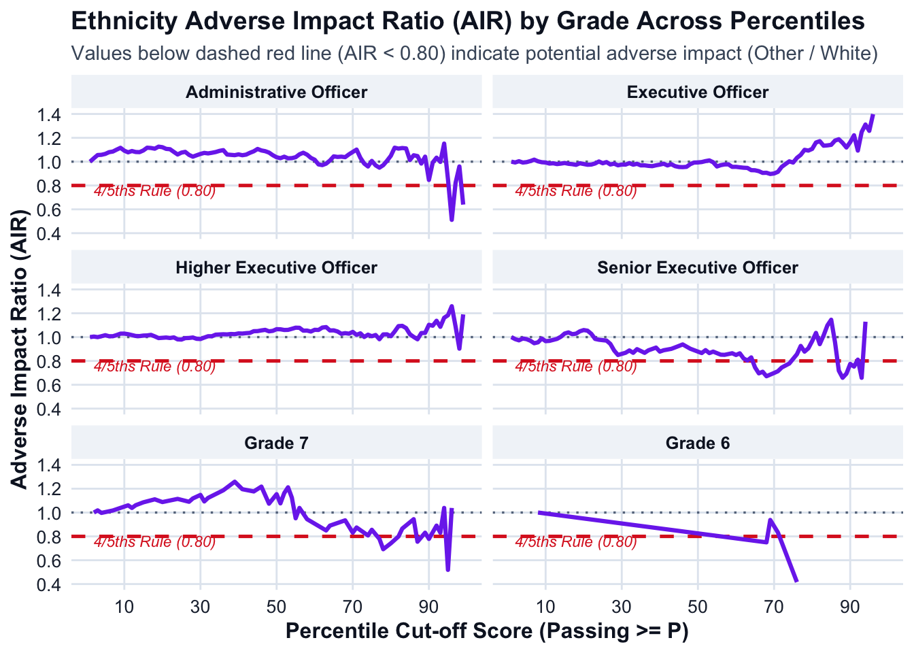
# ==============================================================================
# 4. EXPORT TO WORKBOOK WITH SEPARATE SHEETS PER GRADE
# ==============================================================================
wb_ethnicity <- createWorkbook()
grade_sheet_names <- list(
"Administrative Officer" = "Admin Officer",
"Executive Officer" = "Exec Officer",
"Higher Executive Officer" = "Higher Exec Officer",
"Senior Executive Officer" = "Senior Exec Officer",
"Grade 7" = "Grade 7",
"Grade 6" = "Grade 6"
)
header_style <- createStyle(
fontColour = "#0f172a",
fgFill = "#e2e8f0",
textDecoration = "bold",
halign = "center",
border = "bottom",
borderColour = "#94a3b8"
)
body_style <- createStyle(
fontColour = "#1e293b",
fgFill = "#ffffff",
halign = "left"
)
violation_style <- createStyle(
fontColour = "#991b1b",
fgFill = "#fee2e2"
)
for (grd in target_grades) {
sheet_name <- grade_sheet_names[[grd]]
addWorksheet(wb_ethnicity, sheet_name)
grade_data_export <- percentile_ai_ethnicity_summary %>%
filter(Grade == grd) %>%
select(-Grade)
writeData(wb_ethnicity, sheet_name, grade_data_export, startRow = 1, startCol = 1)
# Format body rows
addStyle(wb_ethnicity, sheet_name, body_style,
rows = 2:(nrow(grade_data_export) + 1),
cols = 1:ncol(grade_data_export),
gridExpand = TRUE)
# Format header
addStyle(wb_ethnicity, sheet_name, header_style,
rows = 1,
cols = 1:ncol(grade_data_export),
gridExpand = TRUE)
# Highlight rows with AIR < 0.80
violation_rows <- which(grade_data_export$Adverse_Impact_Ratio < 0.80) + 1
if (length(violation_rows) > 0) {
addStyle(wb_ethnicity, sheet_name, violation_style,
rows = violation_rows,
cols = 1:ncol(grade_data_export),
gridExpand = TRUE)
}
setColWidths(wb_ethnicity, sheet_name, cols = 1:ncol(grade_data_export), widths = "auto")
}
excel_ethnicity_filename <- "CSNT_Ethnicity_Adverse_Impact_by_Grade_2025.xlsx"
saveWorkbook(wb_ethnicity, excel_ethnicity_filename, overwrite = TRUE)
cat("\nExcel report successfully created with separate sheets:", excel_ethnicity_filename, "\n\n")
Excel report successfully created with separate sheets: CSNT_Ethnicity_Adverse_Impact_by_Grade_2025.xlsx # ==============================================================================
# 5. QUARTO SUMMARY: AI VIOLATION REPORT BY GRADE
# ==============================================================================
cat("## Ethnicity Adverse Impact Summary by Grade (4/5ths Rule Evaluation)\n\n")## Ethnicity Adverse Impact Summary by Grade (4/5ths Rule Evaluation)for (grd in target_grades) {
cat("### Grade:", grd, "\n\n")
grade_df <- percentile_ai_ethnicity_summary %>% filter(Grade == grd)
# Check for percentiles where Adverse Impact Ratio is strictly below 0.80
ai_violations <- grade_df %>%
filter(Adverse_Impact_Ratio < 0.80) %>%
select(
Percentile,
Cum_Rate_White,
Cum_Rate_Other,
Adverse_Impact_Ratio,
Effect_Size_d
)
if (nrow(ai_violations) == 0) {
cat("> **Result:** There is **no adverse impact** for", grd, "across any percentile cutoff (1 to 99). The Adverse Impact Ratio remains $\\ge 0.80$ at all evaluated score levels.\n\n")
} else {
pct_range <- paste0(min(ai_violations$Percentile), "th to ", max(ai_violations$Percentile), "th percentile")
cat("> **Result: ADVERSE IMPACT DETECTED** for", grd, "at", nrow(ai_violations), "percentile cut-off levels (spanning ", pct_range, ").\n\n")
print(
kable(
ai_violations %>%
mutate(
Cum_Rate_White = paste0(round(Cum_Rate_White * 100, 1), "%"),
Cum_Rate_Other = paste0(round(Cum_Rate_Other * 100, 1), "%")
),
col.names = c("Percentile Cutoff", "White Pass Rate", "Other Ethnic Group Pass Rate", "AIR (Other / White)", "Cohen's d"),
caption = paste("Percentiles with Adverse Impact Violations (AIR < 0.80) -", grd)
)
)
cat("\n\n")
}
}### Grade: Administrative Officer
> **Result: ADVERSE IMPACT DETECTED** for Administrative Officer at 2 percentile cut-off levels (spanning 96th to 99th percentile ).
Table: Percentiles with Adverse Impact Violations (AIR < 0.80) - Administrative Officer
| Percentile Cutoff|White Pass Rate |Other Ethnic Group Pass Rate | AIR (Other / White)| Cohen's d|
|-----------------:|:---------------|:----------------------------|-------------------:|---------:|
| 96|2.3% |1.2% | 0.5118| -1.2247|
| 99|0.9% |0.6% | 0.6397| -0.6658|
### Grade: Executive Officer
> **Result:** There is **no adverse impact** for Executive Officer across any percentile cutoff (1 to 99). The Adverse Impact Ratio remains $\ge 0.80$ at all evaluated score levels.
### Grade: Higher Executive Officer
> **Result:** There is **no adverse impact** for Higher Executive Officer across any percentile cutoff (1 to 99). The Adverse Impact Ratio remains $\ge 0.80$ at all evaluated score levels.
### Grade: Senior Executive Officer
> **Result: ADVERSE IMPACT DETECTED** for Senior Executive Officer at 14 percentile cut-off levels (spanning 65th to 93th percentile ).
Table: Percentiles with Adverse Impact Violations (AIR < 0.80) - Senior Executive Officer
| Percentile Cutoff|White Pass Rate |Other Ethnic Group Pass Rate | AIR (Other / White)| Cohen's d|
|-----------------:|:---------------|:----------------------------|-------------------:|---------:|
| 65|38.7% |28.8% | 0.7456| 0.0000|
| 66|38.7% |26.9% | 0.6959| 0.0000|
| 67|38% |26.9% | 0.7093| 0.0000|
| 68|37.2% |25% | 0.6716| NaN|
| 70|35.8% |25% | 0.6990| 0.0000|
| 71|35% |25% | 0.7135| NaN|
| 72|33.6% |25% | 0.7446| NaN|
| 74|32.1% |25% | 0.7784| NaN|
| 87|16.1% |11.5% | 0.7185| -3.2669|
| 88|14.6% |9.6% | 0.6587| 0.0000|
| 89|13.9% |9.6% | 0.6933| NaN|
| 90|12.4% |9.6% | 0.7749| -0.3621|
| 91|10.2% |7.7% | 0.7527| 0.0000|
| 93|8.8% |5.8% | 0.6587| NaN|
### Grade: Grade 7
> **Result: ADVERSE IMPACT DETECTED** for Grade 7 at 7 percentile cut-off levels (spanning 77th to 95th percentile ).
Table: Percentiles with Adverse Impact Violations (AIR < 0.80) - Grade 7
| Percentile Cutoff|White Pass Rate |Other Ethnic Group Pass Rate | AIR (Other / White)| Cohen's d|
|-----------------:|:---------------|:----------------------------|-------------------:|---------:|
| 77|29.6% |23.1% | 0.7788| 0|
| 78|27.8% |19.2% | 0.6923| 0|
| 80|25.9% |19.2% | 0.7418| 0|
| 82|24.1% |19.2% | 0.7988| 0|
| 87|20.4% |15.4% | 0.7552| 0|
| 90|14.8% |11.5% | 0.7788| 0|
| 95|7.4% |3.8% | 0.5192| NaN|
### Grade: Grade 6
> **Result: ADVERSE IMPACT DETECTED** for Grade 6 at 4 percentile cut-off levels (spanning 68th to 82th percentile ).
Table: Percentiles with Adverse Impact Violations (AIR < 0.80) - Grade 6
| Percentile Cutoff|White Pass Rate |Other Ethnic Group Pass Rate | AIR (Other / White)| Cohen's d|
|-----------------:|:---------------|:----------------------------|-------------------:|---------:|
| 68|100% |75% | 0.7500| 0|
| 76|60% |25% | 0.4167| 0|
| 77|60% |0% | 0.0000| NaN|
| 82|20% |0% | 0.0000| 0|D.5 Sexual Orientation
# 1. VERIFY DATA & PREPARE DATASET (SEXUAL ORIENTATION)
# Reference: Heterosexual or straight | Focal: Other (Bisexual, Gay or lesbian, Prefer to self-describe)
# ==============================================================================
if (!exists("CSNT_Final_With_Scores")) {
stop("CSNT_Final_With_Scores is not present in the environment.")
}
target_grades <- c(
"Administrative Officer",
"Executive Officer",
"Higher Executive Officer",
"Senior Executive Officer",
"Grade 7",
"Grade 6"
)
# Identify grade column safely
col_grade <- intersect(
c("job_grade", "job_grade.x", "Job_Grade", "Grade"),
colnames(CSNT_Final_With_Scores)
)[1]
# Support both percentile_1PL and percentile_1PL_new column names
col_pct <- intersect(
c("percentile_1PL_new", "percentile_1PL", "Percentile"),
colnames(CSNT_Final_With_Scores)
)[1]
if (is.na(col_pct)) {
stop("Percentile column not found. Run percent_rank() step first.")
}
if (!"what_is_your_sexual_orientation" %in% colnames(CSNT_Final_With_Scores)) {
stop("Column 'what_is_your_sexual_orientation' not found in CSNT_Final_With_Scores.")
}
# Define categories to combine into the 'Other' focal group
focal_orientations <- c(
"Bisexual",
"Gay or lesbian",
"Prefer to self-describe"
)
# Classify sexual orientation: Heterosexual or straight vs Other
df_ai_prep_orientation <- CSNT_Final_With_Scores %>%
filter(.data[[col_grade]] %in% target_grades) %>%
mutate(
raw_orientation = trimws(as.character(what_is_your_sexual_orientation)),
Orientation_Group = case_when(
grepl("^Heterosexual or straight", raw_orientation, ignore.case = TRUE) ~ "Heterosexual or straight",
raw_orientation %in% focal_orientations ~ "Other",
TRUE ~ NA_character_
)
) %>%
filter(!is.na(Orientation_Group)) %>%
filter(!is.na(.data[[col_pct]]), !is.na(theta_1PL_new)) %>%
mutate(
Grade = factor(.data[[col_grade]], levels = target_grades),
Orientation_Group = factor(Orientation_Group, levels = c("Heterosexual or straight", "Other")),
Percentile = round(as.numeric(.data[[col_pct]]))
) %>%
filter(Percentile >= 1, Percentile <= 99)
# ==============================================================================
# 2. CALCULATE ADVERSE IMPACT RATIO FOR EACH PERCENTILE (1 TO 99) BY GRADE
# Reference Group = 'Heterosexual or straight' | Focal Group = 'Other'
# ==============================================================================
# Step A: Grand totals per grade and sexual orientation group (denominators)
total_counts_per_grade <- df_ai_prep_orientation %>%
group_by(Grade) %>%
summarise(
Grand_Total_Hetero = sum(Orientation_Group == "Heterosexual or straight"),
Grand_Total_Other = sum(Orientation_Group == "Other"),
.groups = "drop"
)
# Step B: Counts and theta distribution per percentile
pct_counts <- df_ai_prep_orientation %>%
group_by(Grade, Percentile) %>%
summarise(
Count_Hetero = sum(Orientation_Group == "Heterosexual or straight"),
Count_Other = sum(Orientation_Group == "Other"),
Mean_Theta_Hetero = mean(theta_1PL_new[Orientation_Group == "Heterosexual or straight"], na.rm = TRUE),
Mean_Theta_Other = mean(theta_1PL_new[Orientation_Group == "Other"], na.rm = TRUE),
SD_Theta_Hetero = sd(theta_1PL_new[Orientation_Group == "Heterosexual or straight"], na.rm = TRUE),
SD_Theta_Other = sd(theta_1PL_new[Orientation_Group == "Other"], na.rm = TRUE),
.groups = "drop"
)
# Step C: Cumulative selection rates and Adverse Impact Ratios (Other / Heterosexual)
percentile_ai_orientation_summary <- pct_counts %>%
left_join(total_counts_per_grade, by = "Grade") %>%
arrange(Grade, desc(Percentile)) %>% # Descending for reverse cumulative sums
group_by(Grade) %>%
mutate(
# Cumulative candidates meeting or exceeding cut-off
Cum_Passed_Hetero = cumsum(Count_Hetero),
Cum_Passed_Other = cumsum(Count_Other),
# Cumulative Selection Rates
Cum_Rate_Hetero = Cum_Passed_Hetero / Grand_Total_Hetero,
Cum_Rate_Other = Cum_Passed_Other / Grand_Total_Other,
# AIR: Focal Group ('Other') / Reference Group ('Heterosexual or straight')
Adverse_Impact_Ratio = round(Cum_Rate_Other / ifelse(Cum_Rate_Hetero == 0, NA, Cum_Rate_Hetero), 4),
# 4/5ths Rule flag (< 0.80)
Status_4_5ths = ifelse(Adverse_Impact_Ratio < 0.80, "ADVERSE IMPACT (< 0.80)", "PASS (>= 0.80)"),
# Effect Size (Cohen's d: Other - Heterosexual)
Pooled_SD_Pct = sqrt((replace_na(SD_Theta_Hetero, 0)^2 + replace_na(SD_Theta_Other, 0)^2) / 2),
Effect_Size_d = ifelse(Pooled_SD_Pct > 0, round((Mean_Theta_Other - Mean_Theta_Hetero) / Pooled_SD_Pct, 4), 0)
) %>%
arrange(Grade, Percentile) %>%
select(
Grade, Percentile,
Count_Hetero, Count_Other,
Cum_Passed_Hetero, Cum_Passed_Other,
Cum_Rate_Hetero, Cum_Rate_Other,
Adverse_Impact_Ratio, Status_4_5ths,
Mean_Theta_Hetero, Mean_Theta_Other, Effect_Size_d
) %>%
ungroup()
# ==============================================================================
# 3. VISUALIZATION: MULTI-PANEL ADVERSE IMPACT RATIO CHART BY GRADE
# ==============================================================================
theme_clean_report <- theme_minimal(base_size = 12) +
theme(
plot.background = element_rect(fill = "white", color = NA),
panel.background = element_rect(fill = "white", color = NA),
panel.grid.major = element_line(color = "#e2e8f0", linewidth = 0.5),
panel.grid.minor = element_blank(),
axis.text = element_text(color = "#1e293b", size = 10),
axis.title = element_text(color = "#0f172a", face = "bold"),
plot.title = element_text(color = "#0f172a", face = "bold", size = 14),
plot.subtitle = element_text(color = "#475569", size = 11),
strip.background = element_rect(fill = "#f1f5f9", color = NA),
strip.text = element_text(color = "#0f172a", face = "bold")
)
p_orientation_ai <- ggplot(percentile_ai_orientation_summary, aes(x = Percentile, y = Adverse_Impact_Ratio)) +
annotate("rect", xmin = -Inf, xmax = Inf, ymin = 0, ymax = 0.80,
fill = "#fee2e2", alpha = 0.6) +
geom_hline(yintercept = 0.80, linetype = "dashed", color = "#dc2626", linewidth = 0.9) +
geom_hline(yintercept = 1.00, linetype = "dotted", color = "#64748b", linewidth = 0.6) +
geom_line(color = "#d97706", linewidth = 1.1) +
annotate("text", x = 18, y = 0.76, label = "4/5ths Rule (0.80)",
color = "#dc2626", size = 3, fontface = "italic") +
facet_wrap(~ Grade, ncol = 2) +
scale_y_continuous(
limits = c(0.4, 1.4),
breaks = seq(0.4, 1.4, by = 0.2),
labels = scales::number_format(accuracy = 0.1)
) +
scale_x_continuous(breaks = seq(10, 90, by = 20)) +
labs(
title = "Sexual Orientation Adverse Impact Ratio (AIR) by Grade Across Percentiles",
subtitle = "Values below dashed red line (AIR < 0.80) indicate potential adverse impact (Other / Heterosexual or straight)",
x = "Percentile Cut-off Score (Passing >= P)",
y = "Adverse Impact Ratio (AIR)"
) +
theme_clean_report
print(p_orientation_ai)Warning: Removed 43 rows containing missing values or values outside the scale range
(`geom_line()`).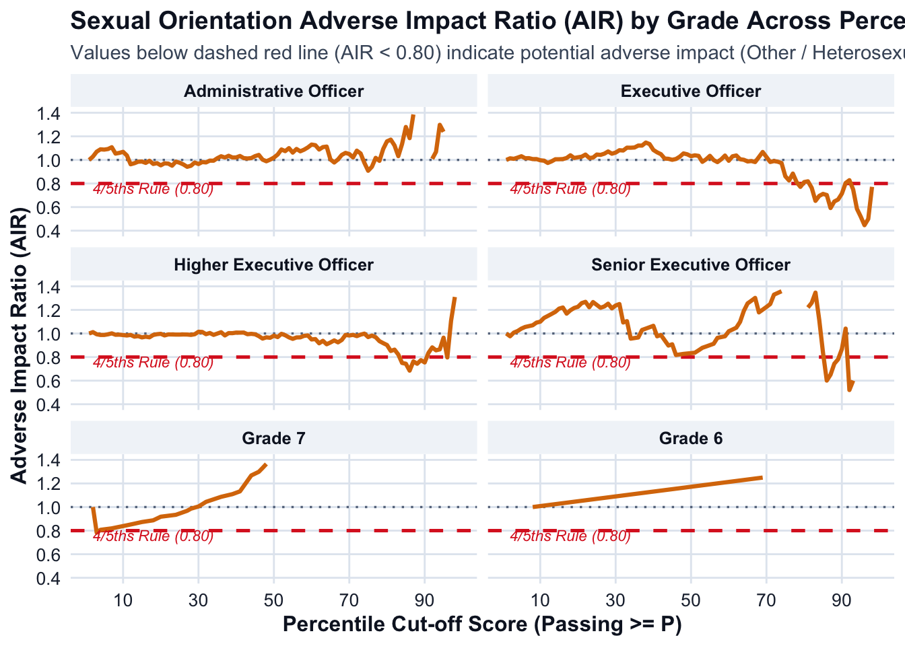
# ==============================================================================
# 4. EXPORT TO WORKBOOK WITH SEPARATE SHEETS PER GRADE
# ==============================================================================
wb_orientation <- createWorkbook()
grade_sheet_names <- list(
"Administrative Officer" = "Admin Officer",
"Executive Officer" = "Exec Officer",
"Higher Executive Officer" = "Higher Exec Officer",
"Senior Executive Officer" = "Senior Exec Officer",
"Grade 7" = "Grade 7",
"Grade 6" = "Grade 6"
)
header_style <- createStyle(
fontColour = "#0f172a",
fgFill = "#e2e8f0",
textDecoration = "bold",
halign = "center",
border = "bottom",
borderColour = "#94a3b8"
)
body_style <- createStyle(
fontColour = "#1e293b",
fgFill = "#ffffff",
halign = "left"
)
violation_style <- createStyle(
fontColour = "#991b1b",
fgFill = "#fee2e2"
)
for (grd in target_grades) {
sheet_name <- grade_sheet_names[[grd]]
addWorksheet(wb_orientation, sheet_name)
grade_data_export <- percentile_ai_orientation_summary %>%
filter(Grade == grd) %>%
select(-Grade)
writeData(wb_orientation, sheet_name, grade_data_export, startRow = 1, startCol = 1)
# Format body rows
addStyle(wb_orientation, sheet_name, body_style,
rows = 2:(nrow(grade_data_export) + 1),
cols = 1:ncol(grade_data_export),
gridExpand = TRUE)
# Format header
addStyle(wb_orientation, sheet_name, header_style,
rows = 1,
cols = 1:ncol(grade_data_export),
gridExpand = TRUE)
# Highlight rows with AIR < 0.80
violation_rows <- which(grade_data_export$Adverse_Impact_Ratio < 0.80) + 1
if (length(violation_rows) > 0) {
addStyle(wb_orientation, sheet_name, violation_style,
rows = violation_rows,
cols = 1:ncol(grade_data_export),
gridExpand = TRUE)
}
setColWidths(wb_orientation, sheet_name, cols = 1:ncol(grade_data_export), widths = "auto")
}
excel_orientation_filename <- "CSNT_SexualOrientation_Adverse_Impact_by_Grade_2025.xlsx"
saveWorkbook(wb_orientation, excel_orientation_filename, overwrite = TRUE)
cat("\nExcel report successfully created with separate sheets:", excel_orientation_filename, "\n\n")
Excel report successfully created with separate sheets: CSNT_SexualOrientation_Adverse_Impact_by_Grade_2025.xlsx # ==============================================================================
# 5. QUARTO SUMMARY: AI VIOLATION REPORT BY GRADE
# ==============================================================================
cat("## Sexual Orientation Adverse Impact Summary by Grade (4/5ths Rule Evaluation)\n\n")## Sexual Orientation Adverse Impact Summary by Grade (4/5ths Rule Evaluation)for (grd in target_grades) {
cat("### Grade:", grd, "\n\n")
grade_df <- percentile_ai_orientation_summary %>% filter(Grade == grd)
# Check for percentiles where Adverse Impact Ratio is strictly below 0.80
ai_violations <- grade_df %>%
filter(Adverse_Impact_Ratio < 0.80) %>%
select(
Percentile,
Cum_Rate_Hetero,
Cum_Rate_Other,
Adverse_Impact_Ratio,
Effect_Size_d
)
if (nrow(ai_violations) == 0) {
cat("> **Result:** There is **no adverse impact** for", grd, "across any percentile cutoff (1 to 99). The Adverse Impact Ratio remains $\\ge 0.80$ at all evaluated score levels.\n\n")
} else {
pct_range <- paste0(min(ai_violations$Percentile), "th to ", max(ai_violations$Percentile), "th percentile")
cat("> **Result: ADVERSE IMPACT DETECTED** for", grd, "at", nrow(ai_violations), "percentile cut-off levels (spanning ", pct_range, ").\n\n")
print(
kable(
ai_violations %>%
mutate(
Cum_Rate_Hetero = paste0(round(Cum_Rate_Hetero * 100, 1), "%"),
Cum_Rate_Other = paste0(round(Cum_Rate_Other * 100, 1), "%")
),
col.names = c("Percentile Cutoff", "Heterosexual Pass Rate", "LGB+ (Other) Pass Rate", "AIR (Other / Hetero)", "Cohen's d"),
caption = paste("Percentiles with Adverse Impact Violations (AIR < 0.80) -", grd)
)
)
cat("\n\n")
}
}### Grade: Administrative Officer
> **Result: ADVERSE IMPACT DETECTED** for Administrative Officer at 3 percentile cut-off levels (spanning 97th to 99th percentile ).
Table: Percentiles with Adverse Impact Violations (AIR < 0.80) - Administrative Officer
| Percentile Cutoff|Heterosexual Pass Rate |LGB+ (Other) Pass Rate | AIR (Other / Hetero)| Cohen's d|
|-----------------:|:----------------------|:----------------------|--------------------:|---------:|
| 97|1.1% |0% | 0| 0|
| 98|1% |0% | 0| 0|
| 99|0.9% |0% | 0| NaN|
### Grade: Executive Officer
> **Result: ADVERSE IMPACT DETECTED** for Executive Officer at 17 percentile cut-off levels (spanning 79th to 99th percentile ).
Table: Percentiles with Adverse Impact Violations (AIR < 0.80) - Executive Officer
| Percentile Cutoff|Heterosexual Pass Rate |LGB+ (Other) Pass Rate | AIR (Other / Hetero)| Cohen's d|
|-----------------:|:----------------------|:----------------------|--------------------:|---------:|
| 79|16.4% |12.7% | 0.7716| NaN|
| 82|14.1% |10.8% | 0.7634| -0.1168|
| 83|13.6% |8.9% | 0.6529| NaN|
| 84|12.8% |8.9% | 0.6949| -0.7795|
| 85|11.6% |8.2% | 0.7118| -0.5093|
| 86|10.8% |7.6% | 0.7024| -2.0143|
| 87|9.6% |5.7% | 0.5921| NaN|
| 88|8.8% |5.7% | 0.6473| NaN|
| 89|8.6% |5.7% | 0.6642| NaN|
| 90|8% |5.7% | 0.7139| NaN|
| 93|5.1% |3.8% | 0.7489| -0.1081|
| 94|4.3% |2.5% | 0.5853| -1.2111|
| 95|3.7% |1.9% | 0.5196| -1.1693|
| 96|2.8% |1.3% | 0.4467| NaN|
| 97|2.5% |1.3% | 0.4993| NaN|
| 98|1.6% |1.3% | 0.7716| 0.0011|
| 99|0.9% |0% | 0.0000| NaN|
### Grade: Higher Executive Officer
> **Result: ADVERSE IMPACT DETECTED** for Higher Executive Officer at 8 percentile cut-off levels (spanning 84th to 96th percentile ).
Table: Percentiles with Adverse Impact Violations (AIR < 0.80) - Higher Executive Officer
| Percentile Cutoff|Heterosexual Pass Rate |LGB+ (Other) Pass Rate | AIR (Other / Hetero)| Cohen's d|
|-----------------:|:----------------------|:----------------------|--------------------:|---------:|
| 84|17.9% |13.5% | 0.7501| 0.3663|
| 85|16.4% |12.2% | 0.7434| -1.2087|
| 86|15.9% |10.9% | 0.6850| NaN|
| 87|14.3% |10.9% | 0.7633| -2.1284|
| 88|13.8% |10.3% | 0.7432| NaN|
| 89|13.3% |10.3% | 0.7737| 1.7010|
| 90|11.9% |9% | 0.7544| NaN|
| 96|4.8% |3.8% | 0.7969| NaN|
### Grade: Senior Executive Officer
> **Result: ADVERSE IMPACT DETECTED** for Senior Executive Officer at 10 percentile cut-off levels (spanning 86th to 99th percentile ).
Table: Percentiles with Adverse Impact Violations (AIR < 0.80) - Senior Executive Officer
| Percentile Cutoff|Heterosexual Pass Rate |LGB+ (Other) Pass Rate | AIR (Other / Hetero)| Cohen's d|
|-----------------:|:----------------------|:----------------------|--------------------:|---------:|
| 86|15.9% |9.5% | 0.6007| NaN|
| 87|14.6% |9.5% | 0.6508| NaN|
| 88|12.8% |9.5% | 0.7438| 0.0000|
| 89|12.2% |9.5% | 0.7810| NaN|
| 92|9.1% |4.8% | 0.5206| NaN|
| 93|7.9% |4.8% | 0.6007| 3.0565|
| 94|6.1% |0% | 0.0000| NaN|
| 95|4.9% |0% | 0.0000| NaN|
| 97|3.7% |0% | 0.0000| NaN|
| 99|2.4% |0% | 0.0000| NaN|
### Grade: Grade 7
> **Result: ADVERSE IMPACT DETECTED** for Grade 7 at 5 percentile cut-off levels (spanning 3th to 99th percentile ).
Table: Percentiles with Adverse Impact Violations (AIR < 0.80) - Grade 7
| Percentile Cutoff|Heterosexual Pass Rate |LGB+ (Other) Pass Rate | AIR (Other / Hetero)| Cohen's d|
|-----------------:|:----------------------|:----------------------|--------------------:|---------:|
| 3|95.8% |75% | 0.7831| NaN|
| 95|7% |0% | 0.0000| NaN|
| 96|4.2% |0% | 0.0000| 0|
| 98|2.8% |0% | 0.0000| 0|
| 99|1.4% |0% | 0.0000| 0|
### Grade: Grade 6
> **Result:** There is **no adverse impact** for Grade 6 across any percentile cutoff (1 to 99). The Adverse Impact Ratio remains $\ge 0.80$ at all evaluated score levels.D.6 Age
# 1. VERIFY DATA & PREPARE DATASET (AGE GROUP)
# Reference: 'Under 40' (16-24|25-29|30-34|35-39)
# Focal: '40 and Higher' (40-44|45-49|50-54|55-59|60-64|65+)
# ==============================================================================
if (!exists("CSNT_Final_With_Scores")) {
stop("CSNT_Final_With_Scores is not present in the environment.")
}
target_grades <- c(
"Administrative Officer",
"Executive Officer",
"Higher Executive Officer",
"Senior Executive Officer",
"Grade 7",
"Grade 6"
)
# Identify grade column safely
col_grade <- intersect(
c("job_grade", "job_grade.x", "Job_Grade", "Grade"),
colnames(CSNT_Final_With_Scores)
)[1]
# Support both percentile_1PL and percentile_1PL_new column names
col_pct <- intersect(
c("percentile_1PL_new", "percentile_1PL", "Percentile"),
colnames(CSNT_Final_With_Scores)
)[1]
if (is.na(col_pct)) {
stop("Percentile column not found. Run percent_rank() step first.")
}
if (!"select_your_current_age_group" %in% colnames(CSNT_Final_With_Scores)) {
stop("Column 'select_your_current_age_group' not found in CSNT_Final_With_Scores.")
}
# Regex patterns matching exact specified age groupings
pattern_under_40 <- "16-24|25-29|30-34|35-39"
pattern_40_plus <- "40-44|45-49|50-54|55-59|60-64|65\\+"
# Classify age groups and filter
df_ai_prep_age <- CSNT_Final_With_Scores %>%
filter(.data[[col_grade]] %in% target_grades) %>%
mutate(
raw_age = trimws(as.character(select_your_current_age_group)),
Age_Group = case_when(
grepl(pattern_under_40, raw_age) ~ "Under 40",
grepl(pattern_40_plus, raw_age) ~ "40 and Higher",
TRUE ~ NA_character_
)
) %>%
filter(!is.na(Age_Group)) %>%
filter(!is.na(.data[[col_pct]]), !is.na(theta_1PL_new)) %>%
mutate(
Grade = factor(.data[[col_grade]], levels = target_grades),
Age_Group = factor(Age_Group, levels = c("Under 40", "40 and Higher")),
Percentile = round(as.numeric(.data[[col_pct]]))
) %>%
filter(Percentile >= 1, Percentile <= 99)
# ==============================================================================
# 2. CALCULATE ADVERSE IMPACT RATIO FOR EACH PERCENTILE (1 TO 99) BY GRADE
# Reference Group = 'Under 40' | Focal Group = '40 and Higher'
# ==============================================================================
# Step A: Grand totals per grade and age group (denominators)
total_counts_per_grade <- df_ai_prep_age %>%
group_by(Grade) %>%
summarise(
Grand_Total_Under40 = sum(Age_Group == "Under 40"),
Grand_Total_40Plus = sum(Age_Group == "40 and Higher"),
.groups = "drop"
)
# Step B: Counts and theta distribution per percentile
pct_counts <- df_ai_prep_age %>%
group_by(Grade, Percentile) %>%
summarise(
Count_Under40 = sum(Age_Group == "Under 40"),
Count_40Plus = sum(Age_Group == "40 and Higher"),
Mean_Theta_Under40 = mean(theta_1PL_new[Age_Group == "Under 40"], na.rm = TRUE),
Mean_Theta_40Plus = mean(theta_1PL_new[Age_Group == "40 and Higher"], na.rm = TRUE),
SD_Theta_Under40 = sd(theta_1PL_new[Age_Group == "Under 40"], na.rm = TRUE),
SD_Theta_40Plus = sd(theta_1PL_new[Age_Group == "40 and Higher"], na.rm = TRUE),
.groups = "drop"
)
# Step C: Cumulative selection rates and Adverse Impact Ratios (40 and Higher / Under 40)
percentile_ai_age_summary <- pct_counts %>%
left_join(total_counts_per_grade, by = "Grade") %>%
arrange(Grade, desc(Percentile)) %>% # Descending for reverse cumulative sums
group_by(Grade) %>%
mutate(
# Cumulative candidates meeting or exceeding cut-off
Cum_Passed_Under40 = cumsum(Count_Under40),
Cum_Passed_40Plus = cumsum(Count_40Plus),
# Cumulative Selection Rates
Cum_Rate_Under40 = Cum_Passed_Under40 / Grand_Total_Under40,
Cum_Rate_40Plus = Cum_Passed_40Plus / Grand_Total_40Plus,
# AIR: Focal Group ('40 and Higher') / Reference Group ('Under 40')
Adverse_Impact_Ratio = round(Cum_Rate_40Plus / ifelse(Cum_Rate_Under40 == 0, NA, Cum_Rate_Under40), 4),
# 4/5ths Rule flag (< 0.80)
Status_4_5ths = ifelse(Adverse_Impact_Ratio < 0.80, "ADVERSE IMPACT (< 0.80)", "PASS (>= 0.80)"),
# Effect Size (Cohen's d: 40 and Higher - Under 40)
Pooled_SD_Pct = sqrt((replace_na(SD_Theta_Under40, 0)^2 + replace_na(SD_Theta_40Plus, 0)^2) / 2),
Effect_Size_d = ifelse(Pooled_SD_Pct > 0, round((Mean_Theta_40Plus - Mean_Theta_Under40) / Pooled_SD_Pct, 4), 0)
) %>%
arrange(Grade, Percentile) %>%
select(
Grade, Percentile,
Count_Under40, Count_40Plus,
Cum_Passed_Under40, Cum_Passed_40Plus,
Cum_Rate_Under40, Cum_Rate_40Plus,
Adverse_Impact_Ratio, Status_4_5ths,
Mean_Theta_Under40, Mean_Theta_40Plus, Effect_Size_d
) %>%
ungroup()
# ==============================================================================
# 3. VISUALIZATION: MULTI-PANEL ADVERSE IMPACT RATIO CHART BY GRADE
# ==============================================================================
theme_clean_report <- theme_minimal(base_size = 12) +
theme(
plot.background = element_rect(fill = "white", color = NA),
panel.background = element_rect(fill = "white", color = NA),
panel.grid.major = element_line(color = "#e2e8f0", linewidth = 0.5),
panel.grid.minor = element_blank(),
axis.text = element_text(color = "#1e293b", size = 10),
axis.title = element_text(color = "#0f172a", face = "bold"),
plot.title = element_text(color = "#0f172a", face = "bold", size = 14),
plot.subtitle = element_text(color = "#475569", size = 11),
strip.background = element_rect(fill = "#f1f5f9", color = NA),
strip.text = element_text(color = "#0f172a", face = "bold")
)
p_age_ai <- ggplot(percentile_ai_age_summary, aes(x = Percentile, y = Adverse_Impact_Ratio)) +
annotate("rect", xmin = -Inf, xmax = Inf, ymin = 0, ymax = 0.80,
fill = "#fee2e2", alpha = 0.6) +
geom_hline(yintercept = 0.80, linetype = "dashed", color = "#dc2626", linewidth = 0.9) +
geom_hline(yintercept = 1.00, linetype = "dotted", color = "#64748b", linewidth = 0.6) +
geom_line(color = "#9333ea", linewidth = 1.1) +
annotate("text", x = 18, y = 0.76, label = "4/5ths Rule (0.80)",
color = "#dc2626", size = 3, fontface = "italic") +
facet_wrap(~ Grade, ncol = 2) +
scale_y_continuous(
limits = c(0.4, 1.4),
breaks = seq(0.4, 1.4, by = 0.2),
labels = scales::number_format(accuracy = 0.1)
) +
scale_x_continuous(breaks = seq(10, 90, by = 20)) +
labs(
title = "Age Adverse Impact Ratio (AIR) by Grade Across Percentiles",
subtitle = "Values below dashed red line (AIR < 0.80) indicate potential adverse impact (40 and Higher / Under 40)",
x = "Percentile Cut-off Score (Passing >= P)",
y = "Adverse Impact Ratio (AIR)"
) +
theme_clean_report
print(p_age_ai)Warning: Removed 13 rows containing missing values or values outside the scale range
(`geom_line()`).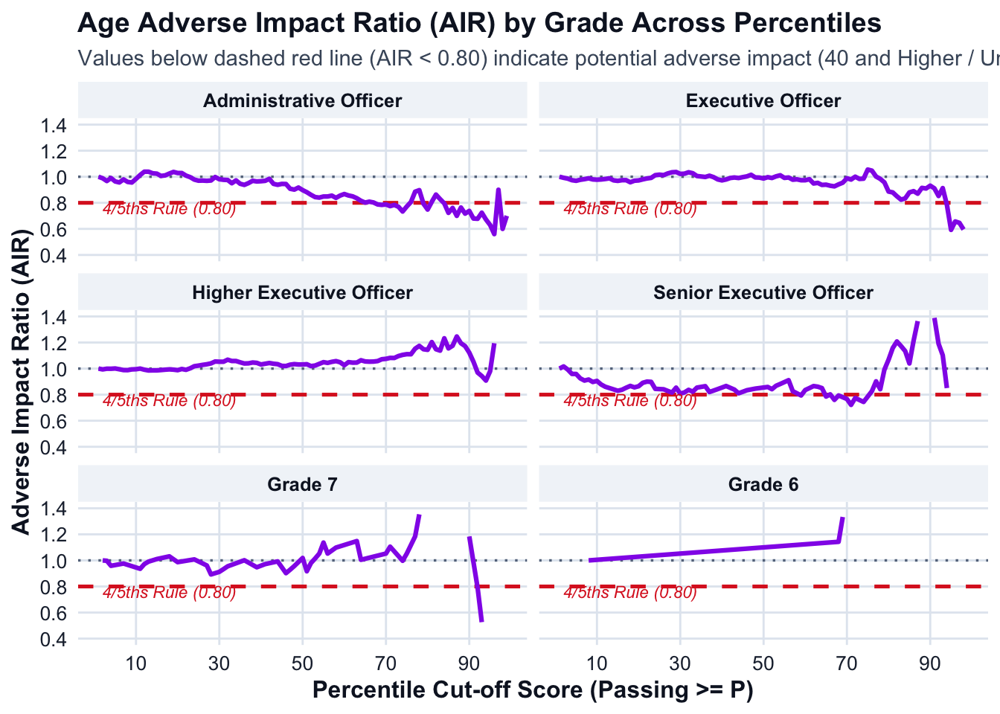
# ==============================================================================
# 4. EXPORT TO WORKBOOK WITH SEPARATE SHEETS PER GRADE
# ==============================================================================
wb_age <- createWorkbook()
grade_sheet_names <- list(
"Administrative Officer" = "Admin Officer",
"Executive Officer" = "Exec Officer",
"Higher Executive Officer" = "Higher Exec Officer",
"Senior Executive Officer" = "Senior Exec Officer",
"Grade 7" = "Grade 7",
"Grade 6" = "Grade 6"
)
header_style <- createStyle(
fontColour = "#0f172a",
fgFill = "#e2e8f0",
textDecoration = "bold",
halign = "center",
border = "bottom",
borderColour = "#94a3b8"
)
body_style <- createStyle(
fontColour = "#1e293b",
fgFill = "#ffffff",
halign = "left"
)
violation_style <- createStyle(
fontColour = "#991b1b",
fgFill = "#fee2e2"
)
for (grd in target_grades) {
sheet_name <- grade_sheet_names[[grd]]
addWorksheet(wb_age, sheet_name)
grade_data_export <- percentile_ai_age_summary %>%
filter(Grade == grd) %>%
select(-Grade)
writeData(wb_age, sheet_name, grade_data_export, startRow = 1, startCol = 1)
# Format body rows
addStyle(wb_age, sheet_name, body_style,
rows = 2:(nrow(grade_data_export) + 1),
cols = 1:ncol(grade_data_export),
gridExpand = TRUE)
# Format header
addStyle(wb_age, sheet_name, header_style,
rows = 1,
cols = 1:ncol(grade_data_export),
gridExpand = TRUE)
# Highlight rows with AIR < 0.80
violation_rows <- which(grade_data_export$Adverse_Impact_Ratio < 0.80) + 1
if (length(violation_rows) > 0) {
addStyle(wb_age, sheet_name, violation_style,
rows = violation_rows,
cols = 1:ncol(grade_data_export),
gridExpand = TRUE)
}
setColWidths(wb_age, sheet_name, cols = 1:ncol(grade_data_export), widths = "auto")
}
excel_age_filename <- "CSNT_Age_Adverse_Impact_by_Grade_2025.xlsx"
saveWorkbook(wb_age, excel_age_filename, overwrite = TRUE)
cat("\nExcel report successfully created with separate sheets:", excel_age_filename, "\n\n")
Excel report successfully created with separate sheets: CSNT_Age_Adverse_Impact_by_Grade_2025.xlsx # ==============================================================================
# 5. QUARTO SUMMARY: AI VIOLATION REPORT BY GRADE
# ==============================================================================
cat("## Age Adverse Impact Summary by Grade (4/5ths Rule Evaluation)\n\n")## Age Adverse Impact Summary by Grade (4/5ths Rule Evaluation)for (grd in target_grades) {
cat("### Grade:", grd, "\n\n")
grade_df <- percentile_ai_age_summary %>% filter(Grade == grd)
# Check for percentiles where Adverse Impact Ratio is strictly below 0.80
ai_violations <- grade_df %>%
filter(Adverse_Impact_Ratio < 0.80) %>%
select(
Percentile,
Cum_Rate_Under40,
Cum_Rate_40Plus,
Adverse_Impact_Ratio,
Effect_Size_d
)
if (nrow(ai_violations) == 0) {
cat("> **Result:** There is **no adverse impact** for", grd, "across any percentile cutoff (1 to 99). The Adverse Impact Ratio remains $\\ge 0.80$ at all evaluated score levels.\n\n")
} else {
pct_range <- paste0(min(ai_violations$Percentile), "th to ", max(ai_violations$Percentile), "th percentile")
cat("> **Result: ADVERSE IMPACT DETECTED** for", grd, "at", nrow(ai_violations), "percentile cut-off levels (spanning ", pct_range, ").\n\n")
print(
kable(
ai_violations %>%
mutate(
Cum_Rate_Under40 = paste0(round(Cum_Rate_Under40 * 100, 1), "%"),
Cum_Rate_40Plus = paste0(round(Cum_Rate_40Plus * 100, 1), "%")
),
col.names = c("Percentile Cutoff", "Under 40 Pass Rate", "40 and Higher Pass Rate", "AIR (40+ / Under 40)", "Cohen's d"),
caption = paste("Percentiles with Adverse Impact Violations (AIR < 0.80) -", grd)
)
)
cat("\n\n")
}
}### Grade: Administrative Officer
> **Result: ADVERSE IMPACT DETECTED** for Administrative Officer at 25 percentile cut-off levels (spanning 68th to 99th percentile ).
Table: Percentiles with Adverse Impact Violations (AIR < 0.80) - Administrative Officer
| Percentile Cutoff|Under 40 Pass Rate |40 and Higher Pass Rate | AIR (40+ / Under 40)| Cohen's d|
|-----------------:|:------------------|:-----------------------|--------------------:|---------:|
| 68|22% |17.3% | 0.7876| 57.8860|
| 69|21.7% |17% | 0.7841| 0.7843|
| 70|20.8% |16.4% | 0.7876| -0.7532|
| 71|20.4% |15.8% | 0.7746| 0.0847|
| 72|19.4% |15.2% | 0.7837| -0.3082|
| 73|19% |14.6% | 0.7696| 0.1307|
| 74|18.2% |13.4% | 0.7334| 0.4666|
| 75|16.9% |13.1% | 0.7719| NaN|
| 79|13% |10.3% | 0.7934| 0.4516|
| 80|12.6% |9.4% | 0.7484| -1.1992|
| 84|9.6% |7.6% | 0.7956| -0.0057|
| 85|8.8% |6.4% | 0.7231| NaN|
| 86|8.4% |6.4% | 0.7605| 0.4721|
| 87|7.4% |5.2% | 0.7001| -1.9185|
| 88|6.4% |4.9% | 0.7637| 0.4513|
| 89|5.9% |4.3% | 0.7172| -2.2457|
| 90|5.4% |4% | 0.7379| -0.4200|
| 91|4.9% |3.3% | 0.6795| -8.9370|
| 92|4.5% |3% | 0.6775| NaN|
| 93|4.2% |3% | 0.7242| -4.3929|
| 94|3.6% |2.4% | 0.6721| 0.8281|
| 95|2.9% |1.8% | 0.6301| -0.4476|
| 96|2.2% |1.2% | 0.5601| 1.3762|
| 98|1% |0.6% | 0.6001| 0.0000|
| 99|0.9% |0.6% | 0.7001| -0.9617|
### Grade: Executive Officer
> **Result: ADVERSE IMPACT DETECTED** for Executive Officer at 5 percentile cut-off levels (spanning 94th to 98th percentile ).
Table: Percentiles with Adverse Impact Violations (AIR < 0.80) - Executive Officer
| Percentile Cutoff|Under 40 Pass Rate |40 and Higher Pass Rate | AIR (40+ / Under 40)| Cohen's d|
|-----------------:|:------------------|:-----------------------|--------------------:|---------:|
| 94|4.5% |3.5% | 0.7849| -0.6643|
| 95|3.9% |2.3% | 0.5926| -0.1360|
| 96|2.9% |1.9% | 0.6569| 4.5464|
| 97|2.6% |1.7% | 0.6464| -0.4948|
| 98|1.7% |1% | 0.5954| NaN|
### Grade: Higher Executive Officer
> **Result:** There is **no adverse impact** for Higher Executive Officer across any percentile cutoff (1 to 99). The Adverse Impact Ratio remains $\ge 0.80$ at all evaluated score levels.
### Grade: Senior Executive Officer
> **Result: ADVERSE IMPACT DETECTED** for Senior Executive Officer at 11 percentile cut-off levels (spanning 59th to 99th percentile ).
Table: Percentiles with Adverse Impact Violations (AIR < 0.80) - Senior Executive Officer
| Percentile Cutoff|Under 40 Pass Rate |40 and Higher Pass Rate | AIR (40+ / Under 40)| Cohen's d|
|-----------------:|:------------------|:-----------------------|--------------------:|---------:|
| 59|47.2% |37.5% | 0.7938| NaN|
| 65|37.8% |29.7% | 0.7855| 0.0000|
| 67|37% |28.1% | 0.7600| NaN|
| 68|35.4% |28.1% | 0.7938| 0.0000|
| 70|34.6% |26.6% | 0.7667| 0.0000|
| 71|34.6% |25% | 0.7216| NaN|
| 72|32.3% |25% | 0.7744| 0.0000|
| 74|31.5% |23.4% | 0.7441| NaN|
| 95|5.5% |1.6% | 0.2835| NaN|
| 97|3.9% |1.6% | 0.3969| NaN|
| 99|2.4% |1.6% | 0.6615| 0.8756|
### Grade: Grade 7
> **Result: ADVERSE IMPACT DETECTED** for Grade 7 at 7 percentile cut-off levels (spanning 92th to 99th percentile ).
Table: Percentiles with Adverse Impact Violations (AIR < 0.80) - Grade 7
| Percentile Cutoff|Under 40 Pass Rate |40 and Higher Pass Rate | AIR (40+ / Under 40)| Cohen's d|
|-----------------:|:------------------|:-----------------------|--------------------:|---------:|
| 92|13.3% |10.5% | 0.7895| 1.6321|
| 93|10% |5.3% | 0.5263| 0.0000|
| 94|10% |0% | 0.0000| 0.0000|
| 95|8.3% |0% | 0.0000| NaN|
| 96|5% |0% | 0.0000| 0.0000|
| 98|3.3% |0% | 0.0000| 0.0000|
| 99|1.7% |0% | 0.0000| 0.0000|
### Grade: Grade 6
> **Result: ADVERSE IMPACT DETECTED** for Grade 6 at 2 percentile cut-off levels (spanning 77th to 82th percentile ).
Table: Percentiles with Adverse Impact Violations (AIR < 0.80) - Grade 6
| Percentile Cutoff|Under 40 Pass Rate |40 and Higher Pass Rate | AIR (40+ / Under 40)| Cohen's d|
|-----------------:|:------------------|:-----------------------|--------------------:|---------:|
| 77|37.5% |0% | 0| NaN|
| 82|12.5% |0% | 0| 0|D.7 Religion
# 1. VERIFY DATA & PREPARE DATASET (RELIGION OR BELIEF)
# Reference: 'Christian'
# Focal: 'Other' (No Religion, Muslim, Hindu, Sikh, Other religion, Buddhist, Jewish)
# Ignored: 'Prefer not to disclose', NA, and unlisted categories
# ==============================================================================
if (!exists("CSNT_Final_With_Scores")) {
stop("CSNT_Final_With_Scores is not present in the environment.")
}
target_grades <- c(
"Administrative Officer",
"Executive Officer",
"Higher Executive Officer",
"Senior Executive Officer",
"Grade 7",
"Grade 6"
)
# Identify grade column safely
col_grade <- intersect(
c("job_grade", "job_grade.x", "Job_Grade", "Grade"),
colnames(CSNT_Final_With_Scores)
)[1]
# Support both percentile_1PL and percentile_1PL_new column names
col_pct <- intersect(
c("percentile_1PL_new", "percentile_1PL", "Percentile"),
colnames(CSNT_Final_With_Scores)
)[1]
if (is.na(col_pct)) {
stop("Percentile column not found. Run percent_rank() step first.")
}
if (!"what_is_your_religion_or_belief" %in% colnames(CSNT_Final_With_Scores)) {
stop("Column 'what_is_your_religion_or_belief' not found in CSNT_Final_With_Scores.")
}
# Regex pattern for focal religion categories
pattern_other_religion <- "^(No religion|Muslim|Hindu|Sikh|Other religion|Buddhist|Jewish)"
# Classify religion/belief groups and filter
df_ai_prep_religion <- CSNT_Final_With_Scores %>%
filter(.data[[col_grade]] %in% target_grades) %>%
mutate(
raw_religion = trimws(as.character(what_is_your_religion_or_belief)),
Religion_Group = case_when(
grepl("^Christian", raw_religion, ignore.case = TRUE) ~ "Christian",
grepl(pattern_other_religion, raw_religion, ignore.case = TRUE) ~ "Other",
TRUE ~ NA_character_
)
) %>%
filter(!is.na(Religion_Group)) %>%
filter(!is.na(.data[[col_pct]]), !is.na(theta_1PL_new)) %>%
mutate(
Grade = factor(.data[[col_grade]], levels = target_grades),
Religion_Group = factor(Religion_Group, levels = c("Christian", "Other")),
Percentile = round(as.numeric(.data[[col_pct]]))
) %>%
filter(Percentile >= 1, Percentile <= 99)
# ==============================================================================
# 2. CALCULATE ADVERSE IMPACT RATIO FOR EACH PERCENTILE (1 TO 99) BY GRADE
# Reference Group = 'Christian' | Focal Group = 'Other'
# ==============================================================================
# Step A: Grand totals per grade and religion group (denominators)
total_counts_per_grade <- df_ai_prep_religion %>%
group_by(Grade) %>%
summarise(
Grand_Total_Christian = sum(Religion_Group == "Christian"),
Grand_Total_Other = sum(Religion_Group == "Other"),
.groups = "drop"
)
# Step B: Counts and theta distribution per percentile
pct_counts <- df_ai_prep_religion %>%
group_by(Grade, Percentile) %>%
summarise(
Count_Christian = sum(Religion_Group == "Christian"),
Count_Other = sum(Religion_Group == "Other"),
Mean_Theta_Christian = mean(theta_1PL_new[Religion_Group == "Christian"], na.rm = TRUE),
Mean_Theta_Other = mean(theta_1PL_new[Religion_Group == "Other"], na.rm = TRUE),
SD_Theta_Christian = sd(theta_1PL_new[Religion_Group == "Christian"], na.rm = TRUE),
SD_Theta_Other = sd(theta_1PL_new[Religion_Group == "Other"], na.rm = TRUE),
.groups = "drop"
)
# Step C: Cumulative selection rates and Adverse Impact Ratios (Other / Christian)
percentile_ai_religion_summary <- pct_counts %>%
left_join(total_counts_per_grade, by = "Grade") %>%
arrange(Grade, desc(Percentile)) %>% # Descending for reverse cumulative sums
group_by(Grade) %>%
mutate(
# Cumulative candidates meeting or exceeding cut-off
Cum_Passed_Christian = cumsum(Count_Christian),
Cum_Passed_Other = cumsum(Count_Other),
# Cumulative Selection Rates
Cum_Rate_Christian = Cum_Passed_Christian / Grand_Total_Christian,
Cum_Rate_Other = Cum_Passed_Other / Grand_Total_Other,
# AIR: Focal Group ('Other') / Reference Group ('Christian')
Adverse_Impact_Ratio = round(Cum_Rate_Other / ifelse(Cum_Rate_Christian == 0, NA, Cum_Rate_Christian), 4),
# 4/5ths Rule flag (< 0.80)
Status_4_5ths = ifelse(Adverse_Impact_Ratio < 0.80, "ADVERSE IMPACT (< 0.80)", "PASS (>= 0.80)"),
# Effect Size (Cohen's d: Other - Christian)
Pooled_SD_Pct = sqrt((replace_na(SD_Theta_Christian, 0)^2 + replace_na(SD_Theta_Other, 0)^2) / 2),
Effect_Size_d = ifelse(Pooled_SD_Pct > 0, round((Mean_Theta_Other - Mean_Theta_Christian) / Pooled_SD_Pct, 4), 0)
) %>%
arrange(Grade, Percentile) %>%
select(
Grade, Percentile,
Count_Christian, Count_Other,
Cum_Passed_Christian, Cum_Passed_Other,
Cum_Rate_Christian, Cum_Rate_Other,
Adverse_Impact_Ratio, Status_4_5ths,
Mean_Theta_Christian, Mean_Theta_Other, Effect_Size_d
) %>%
ungroup()
# ==============================================================================
# 3. VISUALIZATION: MULTI-PANEL ADVERSE IMPACT RATIO CHART BY GRADE
# ==============================================================================
theme_clean_report <- theme_minimal(base_size = 12) +
theme(
plot.background = element_rect(fill = "white", color = NA),
panel.background = element_rect(fill = "white", color = NA),
panel.grid.major = element_line(color = "#e2e8f0", linewidth = 0.5),
panel.grid.minor = element_blank(),
axis.text = element_text(color = "#1e293b", size = 10),
axis.title = element_text(color = "#0f172a", face = "bold"),
plot.title = element_text(color = "#0f172a", face = "bold", size = 14),
plot.subtitle = element_text(color = "#475569", size = 11),
strip.background = element_rect(fill = "#f1f5f9", color = NA),
strip.text = element_text(color = "#0f172a", face = "bold")
)
p_religion_ai <- ggplot(percentile_ai_religion_summary, aes(x = Percentile, y = Adverse_Impact_Ratio)) +
annotate("rect", xmin = -Inf, xmax = Inf, ymin = 0, ymax = 0.80,
fill = "#fee2e2", alpha = 0.6) +
geom_hline(yintercept = 0.80, linetype = "dashed", color = "#dc2626", linewidth = 0.9) +
geom_hline(yintercept = 1.00, linetype = "dotted", color = "#64748b", linewidth = 0.6) +
geom_line(color = "#059669", linewidth = 1.1) +
annotate("text", x = 18, y = 0.76, label = "4/5ths Rule (0.80)",
color = "#dc2626", size = 3, fontface = "italic") +
facet_wrap(~ Grade, ncol = 2) +
scale_y_continuous(
limits = c(0.4, 1.4),
breaks = seq(0.4, 1.4, by = 0.2),
labels = scales::number_format(accuracy = 0.1)
) +
scale_x_continuous(breaks = seq(10, 90, by = 20)) +
labs(
title = "Religion / Belief Adverse Impact Ratio (AIR) by Grade Across Percentiles",
subtitle = "Values below dashed red line (AIR < 0.80) indicate potential adverse impact (Other / Christian)",
x = "Percentile Cut-off Score (Passing >= P)",
y = "Adverse Impact Ratio (AIR)"
) +
theme_clean_report
print(p_religion_ai)Warning: Removed 19 rows containing missing values or values outside the scale range
(`geom_line()`).`geom_line()`: Each group consists of only one observation.
ℹ Do you need to adjust the group aesthetic?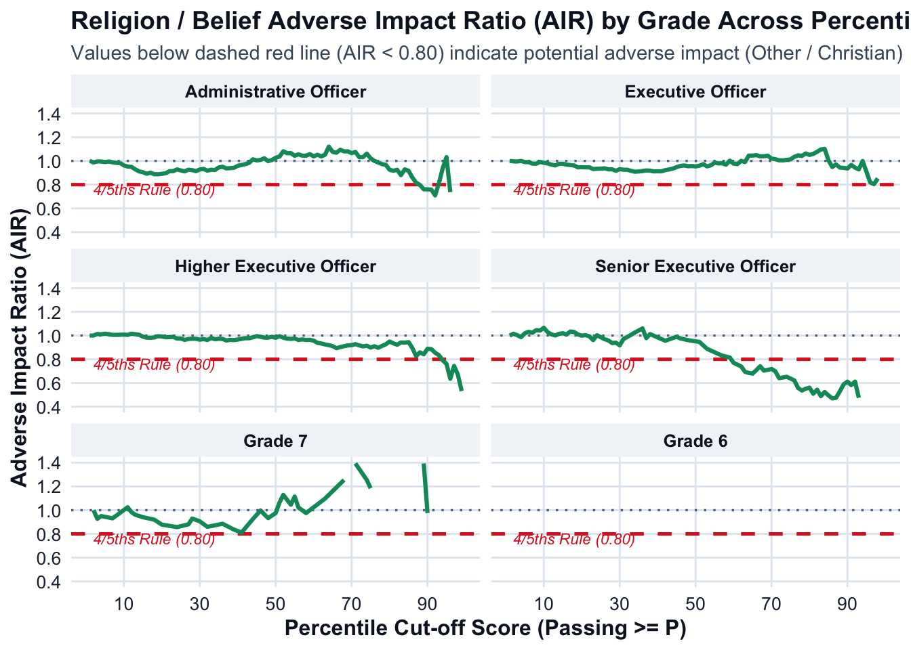
# ==============================================================================
# 4. EXPORT TO WORKBOOK WITH SEPARATE SHEETS PER GRADE
# ==============================================================================
wb_religion <- createWorkbook()
grade_sheet_names <- list(
"Administrative Officer" = "Admin Officer",
"Executive Officer" = "Exec Officer",
"Higher Executive Officer" = "Higher Exec Officer",
"Senior Executive Officer" = "Senior Exec Officer",
"Grade 7" = "Grade 7",
"Grade 6" = "Grade 6"
)
header_style <- createStyle(
fontColour = "#0f172a",
fgFill = "#e2e8f0",
textDecoration = "bold",
halign = "center",
border = "bottom",
borderColour = "#94a3b8"
)
body_style <- createStyle(
fontColour = "#1e293b",
fgFill = "#ffffff",
halign = "left"
)
violation_style <- createStyle(
fontColour = "#991b1b",
fgFill = "#fee2e2"
)
for (grd in target_grades) {
sheet_name <- grade_sheet_names[[grd]]
addWorksheet(wb_religion, sheet_name)
grade_data_export <- percentile_ai_religion_summary %>%
filter(Grade == grd) %>%
select(-Grade)
writeData(wb_religion, sheet_name, grade_data_export, startRow = 1, startCol = 1)
# Format body rows
addStyle(wb_religion, sheet_name, body_style,
rows = 2:(nrow(grade_data_export) + 1),
cols = 1:ncol(grade_data_export),
gridExpand = TRUE)
# Format header
addStyle(wb_religion, sheet_name, header_style,
rows = 1,
cols = 1:ncol(grade_data_export),
gridExpand = TRUE)
# Highlight rows with AIR < 0.80
violation_rows <- which(grade_data_export$Adverse_Impact_Ratio < 0.80) + 1
if (length(violation_rows) > 0) {
addStyle(wb_religion, sheet_name, violation_style,
rows = violation_rows,
cols = 1:ncol(grade_data_export),
gridExpand = TRUE)
}
setColWidths(wb_religion, sheet_name, cols = 1:ncol(grade_data_export), widths = "auto")
}
excel_religion_filename <- "CSNT_Religion_Adverse_Impact_by_Grade_2025.xlsx"
saveWorkbook(wb_religion, excel_religion_filename, overwrite = TRUE)
cat("\nExcel report successfully created with separate sheets:", excel_religion_filename, "\n\n")
Excel report successfully created with separate sheets: CSNT_Religion_Adverse_Impact_by_Grade_2025.xlsx # ==============================================================================
# 5. QUARTO SUMMARY: AI VIOLATION REPORT BY GRADE
# ==============================================================================
cat("## Religion / Belief Adverse Impact Summary by Grade (4/5ths Rule Evaluation)\n\n")## Religion / Belief Adverse Impact Summary by Grade (4/5ths Rule Evaluation)for (grd in target_grades) {
cat("### Grade:", grd, "\n\n")
grade_df <- percentile_ai_religion_summary %>% filter(Grade == grd)
# Check for percentiles where Adverse Impact Ratio is strictly below 0.80
ai_violations <- grade_df %>%
filter(Adverse_Impact_Ratio < 0.80) %>%
select(
Percentile,
Cum_Rate_Christian,
Cum_Rate_Other,
Adverse_Impact_Ratio,
Effect_Size_d
)
if (nrow(ai_violations) == 0) {
cat("> **Result:** There is **no adverse impact** for", grd, "across any percentile cutoff (1 to 99). The Adverse Impact Ratio remains $\\ge 0.80$ at all evaluated score levels.\n\n")
} else {
pct_range <- paste0(min(ai_violations$Percentile), "th to ", max(ai_violations$Percentile), "th percentile")
cat("> **Result: ADVERSE IMPACT DETECTED** for", grd, "at", nrow(ai_violations), "percentile cut-off levels (spanning ", pct_range, ").\n\n")
print(
kable(
ai_violations %>%
mutate(
Cum_Rate_Christian = paste0(round(Cum_Rate_Christian * 100, 1), "%"),
Cum_Rate_Other = paste0(round(Cum_Rate_Other * 100, 1), "%")
),
col.names = c("Percentile Cutoff", "Christian Pass Rate", "Other Religion / Belief Pass Rate", "AIR (Other / Christian)", "Cohen's d"),
caption = paste("Percentiles with Adverse Impact Violations (AIR < 0.80) -", grd)
)
)
cat("\n\n")
}
}### Grade: Administrative Officer
> **Result: ADVERSE IMPACT DETECTED** for Administrative Officer at 9 percentile cut-off levels (spanning 88th to 99th percentile ).
Table: Percentiles with Adverse Impact Violations (AIR < 0.80) - Administrative Officer
| Percentile Cutoff|Christian Pass Rate |Other Religion / Belief Pass Rate | AIR (Other / Christian)| Cohen's d|
|-----------------:|:-------------------|:---------------------------------|-----------------------:|---------:|
| 88|6.7% |5.4% | 0.7972| 0.2837|
| 89|6.4% |4.9% | 0.7615| 1.8615|
| 90|5.8% |4.4% | 0.7602| 0.4200|
| 91|5.2% |4% | 0.7586| -0.9030|
| 92|4.9% |3.5% | 0.7093| NaN|
| 96|2.1% |1.6% | 0.7369| NaN|
| 97|2.1% |0.5% | 0.2211| 0.0000|
| 98|1.8% |0.5% | 0.2579| 0.0000|
| 99|1.8% |0.3% | 0.1719| 0.2147|
### Grade: Executive Officer
> **Result:** There is **no adverse impact** for Executive Officer across any percentile cutoff (1 to 99). The Adverse Impact Ratio remains $\ge 0.80$ at all evaluated score levels.
### Grade: Higher Executive Officer
> **Result: ADVERSE IMPACT DETECTED** for Higher Executive Officer at 6 percentile cut-off levels (spanning 94th to 99th percentile ).
Table: Percentiles with Adverse Impact Violations (AIR < 0.80) - Higher Executive Officer
| Percentile Cutoff|Christian Pass Rate |Other Religion / Belief Pass Rate | AIR (Other / Christian)| Cohen's d|
|-----------------:|:-------------------|:---------------------------------|-----------------------:|---------:|
| 94|8.7% |6.9% | 0.7916| 0.8588|
| 95|7.2% |5.5% | 0.7606| 0.4570|
| 96|6.3% |4% | 0.6359| 0.2870|
| 97|4.3% |3.2% | 0.7433| 0.1715|
| 98|3.3% |2.2% | 0.6704| -1.3809|
| 99|3.2% |1.7% | 0.5324| -0.5480|
### Grade: Senior Executive Officer
> **Result: ADVERSE IMPACT DETECTED** for Senior Executive Officer at 35 percentile cut-off levels (spanning 60th to 99th percentile ).
Table: Percentiles with Adverse Impact Violations (AIR < 0.80) - Senior Executive Officer
| Percentile Cutoff|Christian Pass Rate |Other Religion / Belief Pass Rate | AIR (Other / Christian)| Cohen's d|
|-----------------:|:-------------------|:---------------------------------|-----------------------:|---------:|
| 60|50.9% |39.2% | 0.7701| 0.0000|
| 61|50.9% |38.5% | 0.7550| 0.0000|
| 62|50.9% |37.7% | 0.7399| NaN|
| 63|50.9% |35.4% | 0.6946| -0.3279|
| 64|47.2% |32.3% | 0.6849| -10.9742|
| 65|45.3% |30.8% | 0.6795| 0.0000|
| 66|43.4% |30.8% | 0.7090| 0.0000|
| 67|41.5% |30.8% | 0.7413| NaN|
| 68|41.5% |29.2% | 0.7042| 0.0000|
| 70|39.6% |28.5% | 0.7183| 0.0000|
| 71|39.6% |27.7% | 0.6989| NaN|
| 72|39.6% |25.4% | 0.6407| 0.0000|
| 74|37.7% |24.6% | 0.6523| -2.2698|
| 76|35.8% |22.3% | 0.6223| NaN|
| 77|35.8% |20% | 0.5579| 0.0000|
| 78|35.8% |19.2% | 0.5364| 3.4696|
| 79|32.1% |17.7% | 0.5516| 0.0000|
| 80|30.2% |16.9% | 0.5606| NaN|
| 81|30.2% |15.4% | 0.5096| 0.0000|
| 82|28.3% |15.4% | 0.5436| NaN|
| 83|28.3% |13.8% | 0.4892| 0.0000|
| 84|26.4% |13.8% | 0.5242| 0.0000|
| 85|26.4% |13.1% | 0.4951| -0.9565|
| 86|24.5% |11.5% | 0.4704| 0.0000|
| 87|22.6% |10.8% | 0.4756| 0.0625|
| 88|18.9% |10% | 0.5300| 0.0000|
| 89|17% |10% | 0.5889| 0.0000|
| 90|15.1% |9.2% | 0.6115| -2.1138|
| 91|13.2% |7.7% | 0.5824| 0.0000|
| 92|11.3% |6.9% | 0.6115| NaN|
| 93|11.3% |5.4% | 0.4756| -3.0565|
| 94|9.4% |3.1% | 0.3262| 0.0000|
| 95|7.5% |2.3% | 0.3058| NaN|
| 97|7.5% |0.8% | 0.1019| NaN|
| 99|3.8% |0.8% | 0.2038| 0.0102|
### Grade: Grade 7
> **Result:** There is **no adverse impact** for Grade 7 across any percentile cutoff (1 to 99). The Adverse Impact Ratio remains $\ge 0.80$ at all evaluated score levels.
### Grade: Grade 6
> **Result:** There is **no adverse impact** for Grade 6 across any percentile cutoff (1 to 99). The Adverse Impact Ratio remains $\ge 0.80$ at all evaluated score levels.E. Differential Item Functioning
There is very little evidence of DIF in the current test structure because the test has become quite easy over time and because the new item parameters are on the negative side of the score spectrum.
Recommendations
1.Test level recommendations
A. Current Test Recommendations
Norm recommendations for current parameters
Based on the adverse impact analysis results, cut-off score percentiles can be increased without any adverse impact on the candidates.
Item Level Recommendations
Some of the items with severe violations should be removed from the test to increase test performance. Some of the so-called difficult items have extreme exposure. They need to be removed from the item bank
Items with little exposure, though are easy items, can be kept in the bank to enhance item parameter variation in the test.
Some of the active items were not recalibrated because there was not enough exposure to include in the parameter calculation. Most trial items were exposed insufficiently which prevented IRT scoring
B. Updating Recommendations
- There is item difficulty and person ability mismatch in the test. The test lacks items around person abilities.
- The test is in urgent need of new items higher than ‘0’ difficulty parameter. The test requires a good number of difficult and moderately difficult items besides items around ‘0’ difficulty parameter.
- Considering most of the active items are on the negative side of difficulty spectrum, some of them are almost never exposed decreasing the efficiency of the item bank. Item buckets
2. CAT System
- Item exposure procedures need to be revised. Considering the number of test takers over the year 2025 a good number of items were so insufficiently exposed they were not calibrated. Below are the two approaches to item selection processes.
Sympson–Hetter (SH) Method: Applies a conditional probability parameter (\(t_{j}\)) to decide whether a selected high-information item is actually administered or temporarily held back. [1, 2]
Randomesque / Stratified Selection: Randomly chooses the next item from a small set of the top K most informative items rather than always picking the single absolute best item.
In its current form, the CSNT could be renormed to reflect the current state of the test item parameters. This will require removal of some over exposed items and will reshape item presentation algorithm. Ideally, the test shouls be completely revised with the inclusion of a good number of difficult items. Overall, the CSNT is in urgent need of update.